Allegiances
MarbleClan — A small, scrappy clan of cats who have lived in the Twoleg place called Knoxville for as long as any cat can remember. They take their name from the cool pink stone that runs through the hills like ribbons of frozen sunset.
Celerypaw — a small calico she-cat (the only calico in the clan), Acornpaw's denmate and sister-by-circumstance. Quiet at first meeting. Sharp at the second. Knows where every stick of moss and every drop of dew belongs in the camp.
A Glossary for Twolegs
- moon = a month
- sunhigh = noon
- moonhigh = midnight
- greenleaf = summer
- leaf-fall = autumn
- leaf-bare = winter
- newleaf = spring
- kit = a baby cat
- apprentice = a cat-in-training
- warrior = a full-grown clan cat
- elder = a wise old cat
- medicine cat = a healer
- Twoleg = a human
- Twoleg place = a town or city
- monster = a car
- kittypet = a house cat
- thunderpath = a road
- silverpath = a railroad track
- hollow = a clan's territory
- StarClan = the ancestors who watch from the stars
The Tales
- Prologue: The Hollow
- The Cat Who Built the Walls
- The Three Rivers Meet
- The Cat Who Made Words
- The Volunteer State
- The Mountain That Breathes
- The Trail That Was Not Chosen
- The Wild Boy Who Vanished
- The Day Everything Changed
- The Sea Beneath
- The Wild Cats of the Hill
- The Light That Stays On
- The Secret City
- The Singer of the Mountain
- The Year the Whole World Came
- The Two Sides of One River
- Epilogue: The Voice in the Theatre
- A Final Note
The Hollow
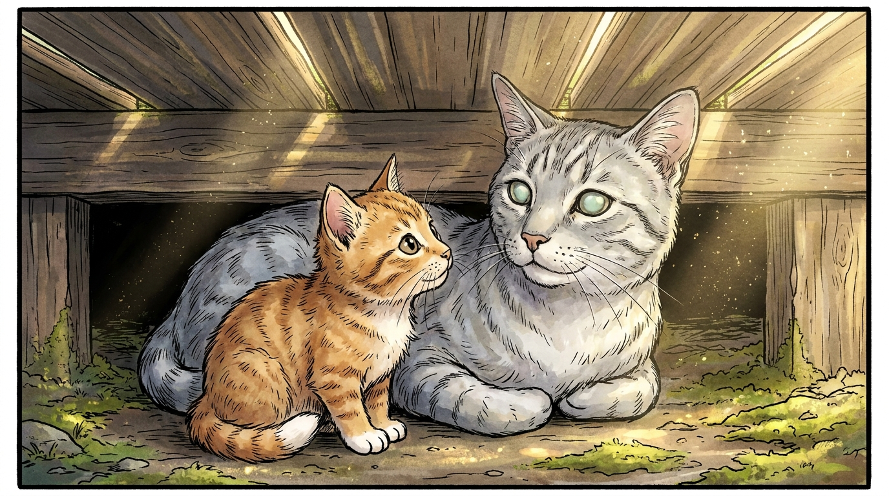
Acornpaw woke before sunhigh, which was odd, because he had stayed up past moonhigh listening to the older cats tell ghost stories. He rolled onto his back, stretched until every claw popped, and blinked up at the wooden underbelly of the porch they slept beneath. Above him, the Twolegs were already moving. He could hear the soft slap of paws — not paws, feet — on the floor.
This was Knoxville. His home.
Knoxville sat in a cradle of green hills, where two rivers met and became one. To the south rose the Smoky Mountains, blue and quiet, breathing fog like a great sleeping animal. To the west, the river curled like a serpent through bottomlands of marble and clay. To the north, freight trains hooted at all hours, calling and answering each other across the dark.
Acornpaw loved it.
He loved the smell of brewery hops drifting from the Old City when the wind came from the east. He loved the way the streetlamps came on one by one at dusk, like StarClan stepping into the sky. He loved the giant gold ball that stood downtown for no reason any cat could explain. He loved the way Riverflight came back from the bank in newleaf with mud on her paws and stories about a heron that had stood in the same spot for three sunrises in a row, doing nothing, just being.
But he did not yet know it. Not really.
To know a place, an apprentice must learn its stories — the cats who lived before, the battles they fought, the secrets they carried. Knowing a place was not just walking through it. It was carrying it. It was being able to close your eyes and feel where the river was even when you couldn't hear it. It was knowing whose ghost lived on which rooftop. It was knowing why your own clan was called what it was, and why the streets had the shapes they had, and what happened in this hollow before it was a hollow at all.
There was only one cat in MarbleClan who knew them all, and her name was Smokefur, and she was older than the oak.
Beside Acornpaw, his denmate stirred. A small calico she-cat opened one yellow eye and then the other and then yawned so wide her whole face seemed to invert.
"You're up early," said Celerypaw.
"You're up at the same time as me," said Acornpaw.
"Yes, but I was planning to be up. You are up by accident. There is a difference."
She licked one paw and drew it across her ear in three precise strokes. Acornpaw watched. Celerypaw did everything in three precise strokes. Eat in three bites. Tap the moss flat in three pats. Decide things in three small nods.
"I'm going to ask Smokefur to tell me the stories of the hollow," he said. "All of them."
"All of them?"
"All of them."
Celerypaw considered this. Her eyes were very serious. Celerypaw's eyes were almost always very serious. It was a thing other apprentices teased her about, until they tried to pull a prank on her and she calmly explained why their plan would fail and how they could improve it for next time. After that, the teasing usually stopped.
"That is a great many stories," she said. "She is older than the oak."
"I know."
"And I would like to hear them too."
"Then come."
She came.
Together they padded across the moss to the elders' den. Smokefur was already awake. Smokefur was always already awake. Her cloudy eyes turned toward them as they came near, and she smiled with those eyes — she had not been able to smile with her mouth in many moons, but the eyes still worked, and they smiled now.
"You are early, kits."
"We are not kits," said Acornpaw, sitting down hard. "We are apprentices."
"We are apprentices who are still small enough to fit under your chin," said Celerypaw. "Which makes us kits when you want it to be."
Smokefur let out her dry rattling laugh. "Look at you. One of you brings me trouble and the other one explains the trouble. I have always wanted such a pair. Sit closer. The wind is changing."
They scooted closer. The wind smelled of coming rain and frying bacon and something sweet and yeasty that the Twolegs called donut.
"Tell us a story," said Acornpaw.
"Which one?"
"All of them."
She laughed harder this time. The cough came after, and Celerypaw pressed her own small body against the elder's flank for warmth without being asked, and Smokefur said nothing but her tail brushed across the apprentice's back twice, in thanks.
"All of them is too many," she said when she could speak again. "Even for me. Pick a place, kits. Any place in our hollow. I will tell you the story that lives in it."
Acornpaw thought hard. His tail twitched. He looked out across the rooftops, across the river, all the way to the mountains.
"Start at the beginning," he said.
Smokefur smiled with her eyes again. "Then I will start with a tom named White."
And outside the porch, somewhere on a Twoleg roof, a freight train wailed once across the dark, and the river kept moving, and a heron stood very still on a flat rock pretending to be a stick, and the hollow opened itself to the apprentices the way it had opened itself to every apprentice that had ever come before, and the long story began.
The Cat Who Built the Walls
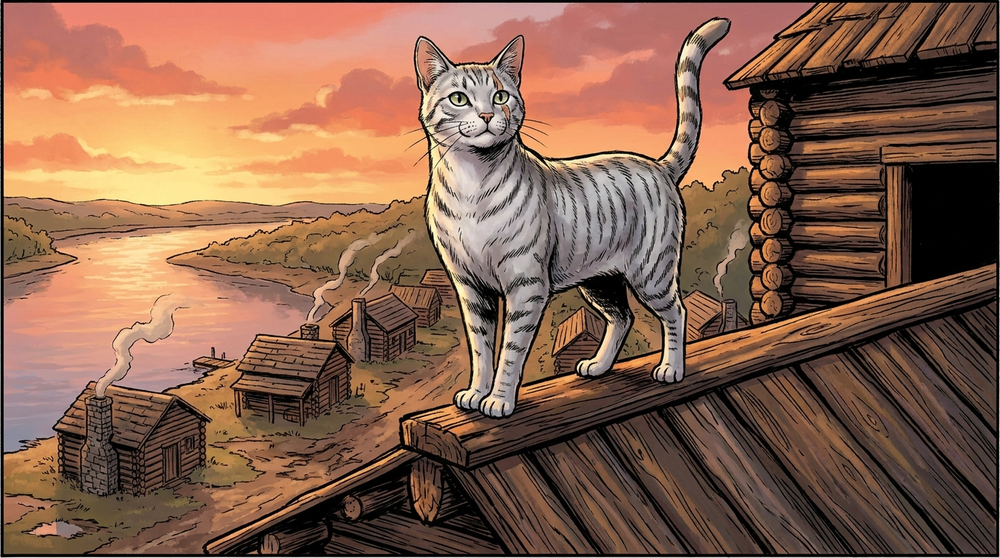
Long before there was a Knoxville, said Smokefur, there was only forest.
The forest belonged to the Cherokee. The Cherokee called the river Tanasi, and from that name, the whole land took its name, and from the land, eventually, took the name of the entire wide territory that the Twolegs would carve out of it many moons later. Tanasi. Roll it around in your mouth, kits. Tanasi. It tastes like cold water from the bottom of a stream.
The cats of that time were lean, careful hunters who lived under porches and in barns and along the riverbanks. They called themselves no clan at all. They simply were. They had no leaders and no rituals and no names that lasted past their own lifetimes. They left no stories, not because they had nothing to say, but because there was nobody yet to listen who knew that stories were the way you said it.
Then the new Twolegs came up the river in long flat boats.
"What kind of Twolegs?" asked Celerypaw, who liked categories.
"Tall, mostly. Thin. With hair on their faces and great heavy tools on their belts. They came from the eastern places. They had names I cannot pronounce. But the cats watched them from the bushes as they swung axes at the trees, and the cats noticed the most important thing about them, which was: they intended to stay."
"How could the cats tell?" Acornpaw asked.
"Three ways. First: they did not eat the wood they cut. They stacked it. Second: they did not move on after a moon, the way travelers do. They came back the next day, and the next, and the next. Third: they brought she-Twolegs and Twoleg kits with them. Travelers do not bring kits."
Acornpaw filed this away. He liked it when stories taught him how to see things, not just remember them.
"One Twoleg in particular," Smokefur went on, "came in the year the cats remember as the Five-Crow Greenleaf, when five crows roosted on the same branch all summer and did not fly. He was tall and quiet and had a slow, steady walk that did not waste energy. His name was James White. He built four log houses and a wall around them and called it a fort, and the cats watched the fort go up and they wondered what kind of cat would take a liking to such a Twoleg."
"There was one, wasn't there," said Celerypaw.
"There always is. His name was Whitewhisker, on account of the streak of pale fur down his cheek. Whitewhisker was no warrior — he was a thinker. He liked the smell of woodsmoke and ink and saddle leather. He liked the sound of Twolegs arguing about laws under the great oak. He decided that whatever the Twolegs were building, he would help to build it too."
So Whitewhisker became the fort's mouser. He killed rats in the granary. He kept the snakes out of the springhouse. He sat in James White's lap on cool evenings when the work of the day was done, and James White ran one large hand down Whitewhisker's spine and said quiet words about the future, words like town and capital and trade route, and Whitewhisker did not understand the words but he understood the tone, which was the tone of a cat who is planning.
In return for the rats and the snakes, the Twolegs left scraps of bacon by the door. They never threw a boot at him. Once, when he came in soaked from a leaf-bare rain, the smallest she-Twoleg picked him up and dried him with a square of cloth and held him close to the fire until he stopped shivering. She talked to him in soft words while she did it. He never forgot the kindness. Some moons later, when she was very sick with a coughing fever, Whitewhisker slept on her bed for nine nights in a row and purred her back into sleep every time she woke crying. The fever broke. The cats said it was Whitewhisker who broke it. The Twolegs said it was the chicken broth. Both can be true.
After a while, more Twolegs came. The fort grew into a village. The village got a name — Knoxville, after a Twoleg named Henry Knox, far away in the eastern places, who was the war-chief of the new country the Twolegs were trying to build. The cats thought it was a strange thing, to name a place after a Twoleg who would never stand on its dirt or smell its rivers. But Twolegs are strange, and you cannot fix that.
Whitewhisker watched the village grow. He watched the dirt path along the river become a wide street of pounded clay. He watched the Twolegs argue about laws and treaties and which streams belonged to which Twolegs. He watched the very first Tennessee governor — a tom named Blount, in Twoleg form — set up his house on the bluff just above the river. The cats called that bluff Council Hill, because every important argument seemed to happen there.
"One time," said Smokefur, leaning her head closer in the way she did when she wanted you to listen extra carefully, "Whitewhisker made a friend among the Cherokee cats."
"He did?" Acornpaw's tail puffed up with excitement.
"He did. Her name was Gentlepelt. She lived in one of the Cherokee villages south of the river, and she came north sometimes to trade fish with the cats of the fort. She was the first cat who taught Whitewhisker that there was more than one way to be a cat in this hollow."
"What happened to Gentlepelt?" Celerypaw asked.
Smokefur was quiet for a moment.
"Her clan moved away. Far away, west, against their will. That is a story for another day, and I will tell it to you when you are stronger. For now, know this: Whitewhisker and Gentlepelt remained friends across the moons until the day Gentlepelt left. They sat together one final night under a willow on the riverbank and did not speak. Whitewhisker walked her to the edge of the great water at dawn, and she pressed her nose to his, and then she was gone, and Whitewhisker watched the boats until they were specks, and then until they were nothing."
Acornpaw's throat felt tight. He did not know why.
"Whitewhisker lived a long, long life," said Smokefur. "He saw the village become a town and the town become a city. When his time came, he climbed up onto the roof of James White's old fort — the very building where it had all begun — and watched the sun set over the hollow. They say he turned to silver and walked into StarClan from there. They say if you sit on a Knoxville rooftop at sunset and listen, you can hear his purr."
Celerypaw was looking at Smokefur with a quiet intensity. "Smokefur," she said. "Was Whitewhisker happy?"
Smokefur considered the question for a long time. "He was useful," she said at last. "He was loved. He was lonely sometimes. He was needed sometimes. He saw a thing built that he had helped to build, and he walked through it on his last day, and all of it was full of his own old paw prints. I think that is happy. I think that may be the only kind of happy a cat can be sure of."
James White really did build a fort here in 1786, and the city was named for Henry Knox, George Washington's Secretary of War. Knoxville was the very first capital of the State of Tennessee, before Nashville took the job. You can still visit a reconstructed James White's Fort downtown, just a few blocks from the Old City. The Cherokee really did call the river Tanasi, and it really is where Tennessee got its name.
The Three Rivers Meet
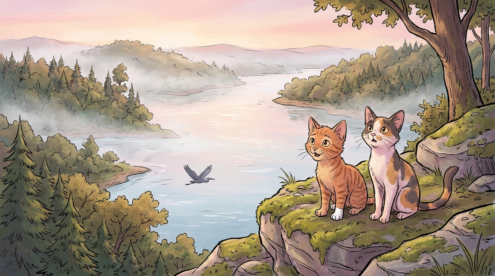
Two days later, Smokefur led Acornpaw and Celerypaw up the longest hill in MarbleClan territory. Up was hard for an elder. She stopped twice. Celerypaw walked beside her each time, not pushing, just present.
At the top, Smokefur sat down with great dignity, as though she had meant to all along, and looked out at the hollow.
"Look down, kits."
They looked.
Below them, two great rivers came out of the eastern mountains and joined together. From the right, a clear cold ribbon ran through pine country. From the left, a slower brown river curled through rolling farmland. They met in a wide silver wedding at the foot of the hill, and from that wedding flowed the Tennessee — the river that ran past their home, the river that everything in the hollow leaned toward.
"What are their names?" asked Celerypaw.
"The clear cold one is the French Broad. The slow brown one is the Holston. Where they meet, the new river takes its own name — the Tennessee — the same name the Cherokee gave the land long before any Twoleg drew a map of it."
Acornpaw stared. He had never seen the rivers meet before. He had only ever seen the one river, the Tennessee, sliding past the porch of his Twolegs every morning. He had not known that it began somewhere. He had not known that it was built out of two other rivers. He had assumed it had always been there in just that shape, the way the moon was always there in just that shape.
"Everything is made of two things," he said softly, to himself.
Celerypaw turned and looked at him with great approval. "Yes," she said. "That is exactly true."
Smokefur let them sit with this for a long while. A pair of ospreys wheeled over the wide water, looking for fish. A single barge crawled south, its long flat back stacked with pale logs. The wind smelled of cold mountain water and warm river mud — the wind of the meeting.
"There used to be a clan here," said Smokefur. "Right here, on this bluff."
"There was?" Acornpaw was on his paws.
"A long time ago. They called themselves no clan at all, because there were no clans yet, but the cats who knew them remembered them as the Cats of the Wedding, because they lived where the rivers married. Their best hunters could swim across both rivers, all three rivers, in one afternoon. They knew where the deepest pools were and which turn of the bank held the fattest crawdads. The river fed them. The river was them."
"What happened to them?"
Smokefur smiled with her eyes again. "They are still here. Some of their blood runs in our blood. When you find a MarbleClan cat who is happiest in the rain, who likes to wash twice a day, who does not flinch at deep water, who can smell a fish before she can see it — you have found a daughter of the Cats of the Wedding. Riverflight is one. Pinetail is one. Mothpelt is one. You may yet be one, Celerypaw. I have watched you with the rain."
Celerypaw said nothing, but her ears turned pink.
"There is something else about this place," said Smokefur, "that the Twolegs forget, but the cats do not. Stand here at the right hour and you can see all four of the great clan-territories at once. Look."
She lifted one paw. "South — those blue mountains. MountainClan, though they do not call themselves that. Wild and tall. Their hunters chase elk."
She moved her paw east. "East — that long valley you can just barely see through the haze. The country of the silverpaths, where the Twoleg trains run all night."
She moved her paw north. "North — that ridge with the white roofs. That is where the Secret City was, in the days of the great Twoleg war. We will speak of it. There is a clan there too, though they keep to themselves and call themselves Quietclan."
And finally she swept her paw west, across the sliver of city below them, and across the river, and into the green hills beyond. "West — our own hollow. MarbleClan. The pink stone clan. Born here at the wedding, raised on bacon and brewery hops and the smell of the great theatre when the Twolegs go in for an evening of laughter. That is your country, kits. It runs from this bluff to the next bend of the river, and from the silverpath in the north to the iron bridge in the south. Know its edges. A cat who does not know the edges of her territory does not really know any of it."
Acornpaw looked at the four directions, one by one. His tail twitched. "What if you go past the edge?" he asked.
Smokefur looked at him a long time before she answered. "Then you have left the hollow. And you are in someone else's. And they may welcome you, or they may not. And you may find your way home, or you may not. The wise apprentice does not test the edge unless he is ready for both."
Acornpaw looked at the long line of blue mountains, and then at the silverpath, and then at the white roofs, and then back at the four directions, all of them open, all of them his someday, none of them his now.
He did not say anything. But a small private door opened inside his chest, and through it he could see — just for a moment — his future self, much bigger, padding along a strange ridge in country he did not yet know, knowing it.
He shook the door closed.
"Tell us another story," he said.
Knoxville sits where the French Broad and Holston Rivers join to form the Tennessee River. The exact spot — at the eastern edge of the city — is one of the most important confluences in the eastern United States. Both feeder rivers come down from the Appalachian Mountains, and the Tennessee they make is a thousand-mile-long river that flows all the way to the Ohio and eventually to the Gulf of Mexico. The ridge above the meeting is called Sharp's Ridge today. From there, on a clear day, you really can see all the way to the Smokies.
The Cat Who Made Words
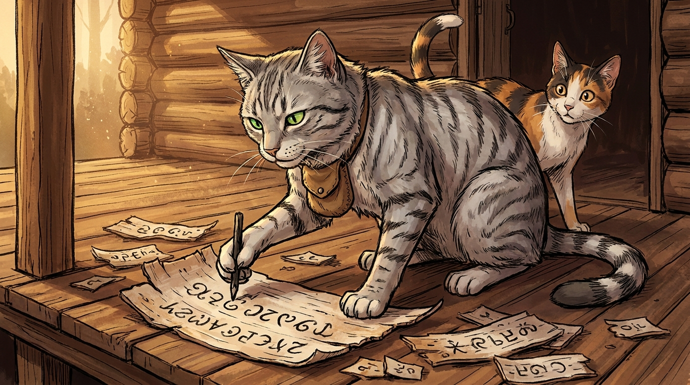
The next morning was misty. A soft white river-fog hung in the lower streets. Acornpaw and Celerypaw padded down to the riverbank with Smokefur, single file. The river was wide here, wider than any cat could leap. Twolegs in long boats slid past, paddling in pairs. A great blue heron stood on a flat rock and pretended to be a stick.
"Look across the water," said Smokefur. "What do you see?"
"Trees," said Acornpaw.
"Yes. And beyond the trees?"
"More trees."
"Yes. And beyond the trees?"
"…More trees?"
Smokefur laughed her dry laugh. "Beyond the trees is a place called Tuskegee. It is gone now — buried under the lake the Twolegs made when they built the great dam. But before the lake, before the white Twolegs, the Cherokee lived there in towns of round houses and council yards and corn fields that stretched to the horizon. And in one of those towns, long ago, was born a tom named Markpelt."
"Markpelt?" Acornpaw said.
"A silver tabby. Quiet, like Celerypaw. Markpelt was a silversmith — he worked beside the Twoleg silversmiths and learned to shape shining things out of melted Twoleg coins. Cats can do this, in the right hands. Markpelt's paws were the right hands."
"But he had a problem," said Celerypaw, who had heard a beginning enough times to recognize one.
"He did. He could not read. Not because he was a cat, although that did not help, but because the Cherokee had no written words. They told their stories with their voices and their hands and their drawings of birds and beasts on bark and skin. The white Twolegs, on the other paw, had little black squiggles on paper that seemed to trap their voices, so the voices could be carried in a leather satchel and let out again far away. Markpelt thought this was the best magic he had ever heard of."
"It is," said Celerypaw fervently.
"He wanted it for his people. And so for twelve moons — twelve years, in Twoleg time — Markpelt sat on his porch and tried to invent his own squiggles. The other cats laughed at him. Some called him crazy. His own friends turned away. His own mate complained that he did nothing but draw and burned dinner three nights in a row. He did not budge. He kept drawing."
"What did he draw?" Acornpaw asked.
"At first, pictures for whole words. There was a picture for fish, a picture for mountain, a picture for to-walk. But there were too many. A cat would have to remember thousands of pictures to read a single story. He gave up on whole words.
"Then he drew pictures for parts of words," Smokefur went on. "A picture for the front of a word. A picture for the middle. A picture for the end. But the parts of words shifted. They sounded one way in one mouth and another way in another. The pictures kept failing him. He gave up on parts of words."
"What did he do?" Celerypaw was leaning forward now.
"He sat under his porch for an entire moon. He did not speak. He did not shape silver. He did not eat much. The Cherokee Twolegs were worried about him. His mate brought him fish she had caught herself and laid them at his paws and walked away without a word.
"And one night, in the deepest dark, Markpelt sat up and yowled as though he had been struck by lightning. Because he had figured it out.
"He drew pictures for sounds. Not words. Not parts of words. Sounds. Every sound a Cherokee mouth could make. There were eighty-five of them. Some were familiar — ah, eh, oo. Some were strange — gha, tsa, qua. But there were only eighty-five, and they could be combined to make every word in the Cherokee tongue."
"Eighty-five is a lot," Acornpaw said.
"It is the right number," Celerypaw said. "Some letters can be borrowed. Others cannot. Eighty-five is exactly the number of pieces a tongue needs to be itself."
Smokefur looked at Celerypaw with great approval. "That is what Markpelt thought too. He drew the eighty-five symbols on bark. He taught them first to his daughter, because she was small enough to learn fast and humble enough to take a cat's lessons seriously. Within a moon she was reading. Then she taught the elders. Then the elders taught the warriors. And within three greenleafs, more Cherokee could read and write their own language than white Twolegs could read and write theirs."
"How is that possible?" Acornpaw asked.
"Because Markpelt's system fit Cherokee like a paw fits its print. The Twolegs' alphabet was made for a different kind of mouth. Cherokee tongues had to bend to fit it. But Markpelt's eighty-five symbols were already the shape of a Cherokee tongue. Learning was not bending. Learning was just remembering what your mouth was already doing."
Celerypaw said nothing for a long while.
"What was Markpelt's true name?" she asked finally.
"In the Twoleg histories, he is called Sequoyah. They named the biggest trees in the world after him — the great red trees of the western coast. They named towns after him. They put him on coins. There is even a museum in his honor, not far from where you sit, on a peninsula sticking out into the lake that buried his old village. If you ever pass it, dip your head. Markpelt earned it."
Acornpaw thought about this for a long time. His tail twitched the way it did when he was working a thing out.
"Smokefur," he said. "Why did Markpelt do it? It took twelve years. People laughed at him. His mate burned dinner."
Smokefur's cloudy eyes turned toward him. "Why does any cat do a hard thing?"
"Because somebody has to?"
"Sometimes. But that is not the deepest reason."
"Because he loved his people?"
"Closer. But still not the deepest."
Acornpaw thought again. "Because… because he could see the thing his people needed, and once you can see a thing, you cannot unsee it, and seeing it makes you the cat who has to make it?"
Smokefur laughed quietly. "Yes. That is the deepest reason. Markpelt could see. Most cats cannot. Most cats walk past their lives and the lives of their clanmates and never see the small invisible thing missing in the middle of it. But every once in a while a cat is born who can. And once that cat sees the missing thing, it becomes hers. She does not get to put it down. She must build it, or it gnaws her until she dies."
Celerypaw was very quiet.
Acornpaw looked at his sister-by-circumstance.
He felt, in a small private way, that he had just learned something about her that he was not yet ready to put into words.
Sequoyah is the only person in recorded human history to invent a writing system entirely on his own, without being able to read any other one first. He was a Cherokee silversmith born around 1770 in the village of Tuskegee on the Little Tennessee River — not far from Knoxville. He finished his syllabary around 1821. Within just a few years, the Cherokee Nation became one of the most literate peoples in the world. The Sequoyah Birthplace Museum sits on the shores of Tellico Lake, about an hour south of Knoxville — on the very ground where his village used to stand, before the lake was made.
The Volunteer State
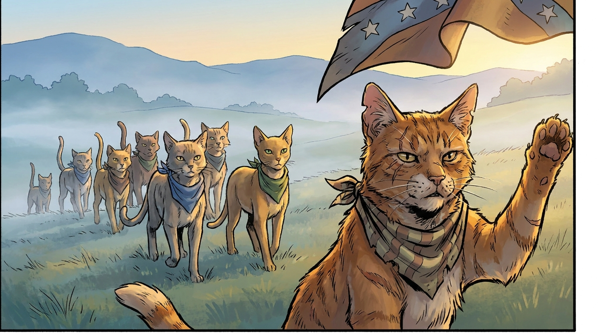
The fourth morning was bright and sharp. Newleaf was finally winning the war against leaf-bare. The first dandelions had pushed up through the cracks in the alley behind the brewery. The starlings were arguing in the rafters again.
Smokefur led the apprentices to the edge of MarbleClan territory, to a place where the city met the open hills. From here they could see the long road that climbed eastward into the mountains.
"Long ago," she said, "there was a great war between two of the largest Twoleg tribes in this country."
"Which tribes?" asked Celerypaw.
"The northern tribe and the southern tribe. They had been one tribe once. They had grown apart. One of the things they had grown apart over was very important and very serious, and we will speak of it another day, because it cannot be told quickly. For today, what matters is that the two tribes went to war, and the Twolegs of Tennessee — our Twolegs — were caught in the middle."
"Which side did MarbleClan fight on?" Acornpaw demanded.
"Hush. I will get there. Today's story is from before that war. Today's story is from a different war — a much earlier war, when the Twolegs of this whole country were fighting against the Twolegs of an even older country across the great water. The country of the Twolegs across the water had armies, and ships, and a king. The country of the Twolegs here — the new country — had farms, and rifles, and stubbornness. It had nothing else."
"What happened?" Celerypaw asked.
"The new-country Twolegs called for soldiers. They needed armies. They sent messengers out across all the new lands they had taken — north, south, and into the wild west of the mountains — saying send us your young toms. Some places sent a few. Some places sent many. Tennessee sent everyone."
"Everyone?"
"Almost. The messenger came to Knoxville and stood under the great oak on Council Hill and read his call, and the Twolegs of Tennessee answered in such numbers that the messenger ran out of paper to write down their names. They came down out of the mountains. They came up from the bottomlands. They came in homespun shirts with their own rifles and their own knives and their own knowledge of the woods. They came in such floods that the messenger sent word back east that he had asked for a thousand and been given five thousand and was begging for permission to send the extras home."
"Why?" Acornpaw asked. "Why did so many come?"
Smokefur looked at him a long time. "Because Tennessee Twolegs do that. They have always done it. There is something in this air — maybe it is the mountains, maybe it is the river, maybe it is the smell of marble in the rocks — that makes Tennessee Twolegs answer when they are called. Even when they are not sure of the cause. Even when they are tired. Even when they have already sent their best the year before. They come."
She paused.
"There was a tom in those days. His name was Bigheart. He was a brown tabby with a torn ear and a bad limp from an old fight with a fox. He should not have been a warrior. He could not run. He could not hunt long-distance. By rights, he should have stayed in the camp and helped with the kits. But when the messenger came, Bigheart limped to the front of the gathering crowd and stood there with his head high, and he said: I will go."
"Did they let him?" Celerypaw asked.
"They did. Because that is the rule of the Volunteer State. A cat who will go counts for more than a cat who can."
"Did Bigheart die?" Acornpaw whispered.
"He did not. He fought in three battles. He came back with a worse limp and one more torn ear, and he sat on his old spot on the porch in front of the brewery for the rest of his moons, and the kits used to climb on his back and he would tell them the stories of the long march and the long battles. He made it sound like a great adventure. He never said a single word about being afraid. But every once in a while, when the wind blew in a certain way and brought the smell of gunpowder from the Twoleg festival on the river, his torn ear would twitch, and he would close his eyes for a moment, and then he would open them, and he would smile at the kits and tell another story."
"Why did the Twolegs call Tennessee the Volunteer State?" Acornpaw asked.
"Because of the cats and Twolegs like Bigheart. Because the cats and Twolegs of Tennessee have always volunteered when the call came. There is no greater badge a state can wear, kits. Volunteer. It means: I will go because someone has to, and I do not want to wait for someone else to do it."
Celerypaw was watching Acornpaw closely. "You'd volunteer," she said. "Wouldn't you."
Acornpaw flushed under his fur. "I — I think so. I'd want to. I don't know if I'd be brave enough."
"You'd volunteer first and figure out the brave part later," Celerypaw said. "That is your particular shape, brother."
Acornpaw was quiet. He did not know if it was a compliment. The way Celerypaw said it, he could not always tell.
"Is that good?" he asked finally.
Celerypaw considered. "It depends," she said, "on whether you survive long enough to learn the difference between brave and not-thinking."
Smokefur let out her dry laugh. "There you have it, kits. The whole moral of the story, said by Celerypaw before sunhigh."
She rose stiffly. "Come. Let us go home. I am tired. And it is going to rain. I can feel it in my hip."
They went home.
That night, lying in his bed of moss, Acornpaw thought about Bigheart, and about how Bigheart had limped to the front of the crowd with his head up. He thought about the smell of gunpowder. He thought about Celerypaw's words: figure out the brave part later.
He did not know it yet, but in three sunrises' time, he was going to do exactly that.
Tennessee really is called "The Volunteer State." The nickname comes from the War of 1812, when President James Madison asked for 1,500 volunteers to fight in the Battle of New Orleans, and Tennessee responded with over 3,500 men in a matter of weeks. The reputation grew during the Mexican-American War, when the federal government again asked Tennessee for 2,800 men and got 30,000 volunteers. Andrew Jackson — a Tennessean — led many of them at New Orleans. Today the University of Tennessee's mascot is the Volunteer, and football crowds in Knoxville still chant the word with a kind of fierceness that surprises visitors.
The Mountain That Breathes
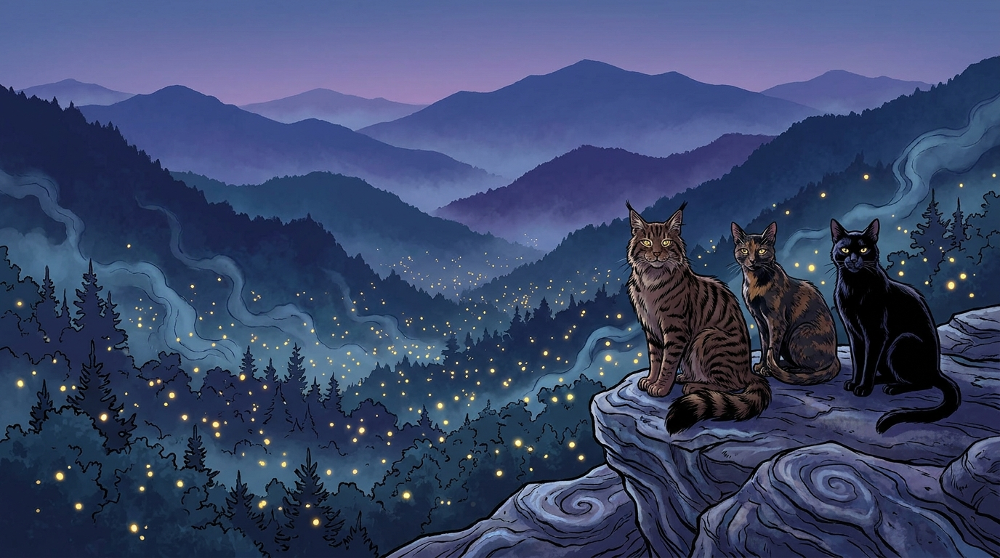
Three days later, when leaf-bare's last cold had finally cracked and the air smelled like newleaf, Smokefur climbed slowly to the top of a low stone wall and stared south.
"Look there, kits. The mountains."
They looked. The Smoky Mountains rose in long blue waves, rank after rank, each paler than the last. Mist clung to their slopes — not fog, exactly, but something more. Something that breathed.
"Why do they smoke?" Acornpaw asked.
"They do not, really. The trees breathe out a kind of mist. From far away it looks like smoke. The Cherokee called the mountains Shaconage — 'place of blue smoke.' I think that is the best name any place has ever had."
"Do cats live there?"
"All kinds. There is a clan there called MountainClan, though they do not call themselves that. They are bigger than us. Their fur is thicker. Their pads are tougher. They hunt black squirrels and crawdads in the streams, and once in a great while they bring down a young deer. Their leader is Bearstar — a great brown tom with shoulders like a small bear. He has been leader for nine moons of moons."
"Do they fight us?"
"No. They have no need. They have the whole forest. Once, long ago, the Twolegs almost cut the forest down — every last tree of it, for the wood. They came with great machines that ate trees as fast as they could. The MountainClan cats hid in the deep hollows and grieved. But other Twolegs said no. Other Twolegs traveled all over this country and asked their friends and their friends' friends and their friends' friends' friends to put a single coin in a jar. And with the coins, those Twolegs bought back the forest, tree by tree, until they had bought enough to make the whole great mountain into a park."
"What is a park?" Acornpaw asked.
"A park is a place that no Twoleg may chop, no matter how badly they want to. It is a kind of promise, written down."
Acornpaw considered this. "Twolegs make a lot of promises."
"They do. They keep some of them. The Smokies are one of the kept ones."
She paused, and her cloudy eyes seemed to focus on something far away.
"There is a story they tell, in MountainClan, about the night the fireflies sing together. Once every greenleaf, for one or two nights only, every firefly in a certain valley flashes at the same instant. Off, on, off, on, a thousand thousand of them, like the mountain itself is breathing light. No cat knows why. No Twoleg, either. It is one of the great mysteries of the world."
"Have you seen it?"
"Once. A long time ago. It is the most beautiful thing I have ever seen, kit. If your Twolegs ever take you in greenleaf — beg them. Hiss. Yowl. Climb the curtains. Make them go."
Both apprentices promised they would.
Smokefur was quiet for a moment, looking south.
"There is more," she said at last. "There is more I want you to know about the mountain. Because one day, if you live long enough and your paws get strong enough, you will go there. And when you go there, you must know how to behave."
She turned and looked at them seriously. "MountainClan rules are different from MarbleClan rules. Listen.
"First: when you cross into MountainClan territory, you announce yourself. You yowl your name and your clan three times into the wind before you take a single pawstep further. They will hear you. They have ears like bats. If you do not announce yourself, they will treat you as an enemy. If you do, they will at least come and look at you.
"Second: do not eat anything in their territory without offering it first to the local elder. The mountain belongs to its elders. The young hunters are only borrowing it.
"Third: do not, under any circumstances, sleep on a flat rock in MountainClan territory. The flat rocks are for ceremonies. Sleeping on one is the worst kind of insult. A young apprentice from FerryClan slept on one once, by accident, and Bearstar made him spend a whole moon learning the names of every mountain in the range, in order, and reciting them every morning to the assembled clan. By the end, the apprentice could recite them in his sleep, but he no longer slept on flat rocks."
Both kits laughed. Acornpaw made a mental note — Do not sleep on flat rocks in MountainClan. He repeated it to himself three times.
"Fourth and most important," said Smokefur. "If you are lost in MountainClan territory and a strange cat offers to walk you home — go with her. Do not be proud. Do not insist on your own way. Do not try to find the path yourself. Lost is lost, kits. Lost is not the time for pride. Lost is the time for help."
She looked very meaningfully at Acornpaw.
"Why are you looking at me?" he asked.
"No reason," said Smokefur. "Just remembering. Just remembering."
She licked her cloudy eyes shut for a long moment. When she opened them, she was looking at the mountains again.
"There was a kit once," she said. "About your age. He went into the mountains alone. He did not announce himself. He did not ask for help. He did not — but I am getting ahead of the story. That is a tale for later. For now, just know: the mountains are full of stories. And the mountains keep them. And the mountains will give them back to you, but only when you are ready to hear them."
Celerypaw and Acornpaw walked home in silence.
Halfway home, Celerypaw said: "Smokefur was talking about us."
"What?" Acornpaw said. "No. She was talking about a kit."
"She was talking about a future kit. A kit who has not yet been lost. She was warning us. She was telling us the rules of the mountain because she thinks we are going to need them."
Acornpaw stopped walking. The wind was warm. The Smokies blue and patient on the horizon.
"How could she know?" he asked.
Celerypaw shrugged. "She is older than the oak."
Great Smoky Mountains National Park is the most-visited national park in America. It is home to over 19,000 known species of plants and animals — including bears, elk, salamanders, and the famous synchronous fireflies, which all flash in unison for a few nights every June. The Cherokee really did call the mountains Shaconage, "place of blue smoke." The park was created in 1934. The land was bought, piece by piece, with donations from ordinary people — including thousands of schoolchildren who collected pennies for the cause. John D. Rockefeller Jr. matched the public donations and saved the project.
The Trail That Was Not Chosen
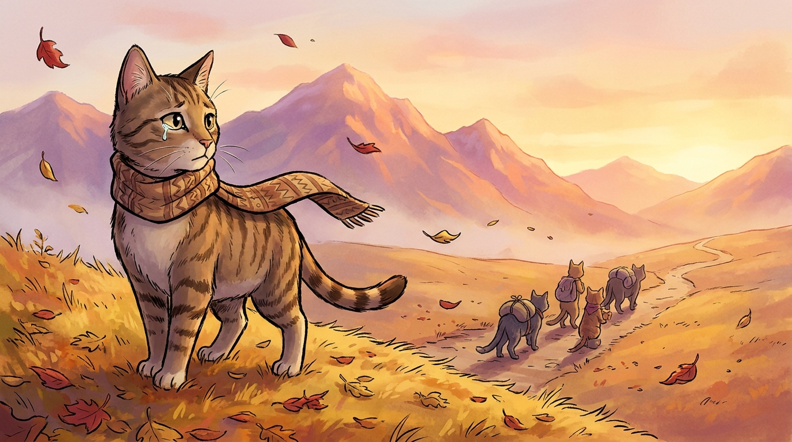
It rained that night. It rained gently, then harder, then in great long sheets that drummed on the porch above their heads and made the Twolegs above start a kind of music. Acornpaw and Celerypaw lay close together for warmth and listened. Outside, the storm sang its own old song.
In the morning the rain had softened. The world smelled new.
They found Smokefur sitting under the porch already, looking out at the wet grass. She did not turn when they came up.
"Sit down, kits."
They sat.
"I have been thinking," said Smokefur, "about Gentlepelt."
Acornpaw remembered the name. The Cherokee she-cat. The friend of Whitewhisker. The one who had to leave.
"I told you that her clan moved away," said Smokefur. "Far away, west, against their will. I said it was a story for another day. Today is that day."
She paused.
"This is a sad story," she said. "Not the saddest. The saddest stories are not for kits and not for elders either. But this one is sad. I will tell it to you because you are old enough now to hear sadness without being broken by it. And because if I do not tell it to you, no one in our clan will remember it, and that is a worse sadness than the story itself."
Both apprentices nodded.
"Long ago," said Smokefur, "before there was a Knoxville, there were Cherokee Twolegs and Cherokee cats living all up and down the Tennessee River. They had been here for many many many moons. They had built towns. They had farms. They had schools — schools, kits, where their kits learned Markpelt's eighty-five symbols. They had a council house in every village. They had laws. They had gardens of corn and beans and squash. They were not visitors here. They were home here.
"Then more and more white Twolegs came. The white Twolegs wanted the land. The Cherokee Twolegs said: we are already here, we have been here forever. The white Twolegs said: we want it anyway. And the white Twolegs were many, and they had iron tools, and rifles, and an army, and a great Twoleg chief in the eastern places who said: the Cherokee must go west. They must walk to a new country we have set aside for them, far across the great river, in a land none of them have ever seen. And if they do not go, we will make them go."
"That's not fair," Acornpaw said, and his voice was tight.
"No," said Smokefur. "It was not fair. It was very far from fair. And many cats, white and Cherokee both, and many Twolegs, white and Cherokee both, said so. They said so loudly. They said so to the great Twoleg chief. They wrote letters. They argued in council houses. A few of them even crossed the great water and asked the kings of other countries to help. But the great Twoleg chief said: go anyway."
"What happened to Gentlepelt?" Celerypaw asked quietly.
"She walked west. With her clan. With the Twolegs of her village. They walked a very long way. It was leaf-fall when they started, and leaf-bare came in the middle of their walking. Many of them did not get to where they were going. The walk has a Cherokee name. It is called Nunna daul Tsuny. In the Twoleg histories it is called the Trail of Tears."
Acornpaw was crying without knowing he was crying. Celerypaw pressed her nose into his shoulder.
"But," said Smokefur, and she said it firmly, "but. Listen. Gentlepelt got there. Gentlepelt was strong. She had grown up swimming in the cold rivers. She had grown up walking up steep ridges to gather chestnuts. She had legs that did not stop. And she had Whitewhisker's voice in her ears, telling her about how Whitewhisker had once stayed up all night purring a sick Twoleg kit back to sleep, and that purring is what cats do when nothing else can be done, and so on the cold nights of the walk, Gentlepelt walked beside the Cherokee kits and purred them through their nights. And many of them lived because of it.
"Gentlepelt got to the new country. It was strange to her at first. The trees were different. The rivers ran in different directions. But she was Gentlepelt, and she made a new home. She had kits there. Her kits had kits. Her kits' kits had kits. There are cats in the western country today, in the place the Twolegs call Oklahoma, who carry a piece of Gentlepelt's blood in their veins. Some of them remember her name. They remember her as the cat who taught them how to purr through the cold."
"So the story has a sad part and a not-sad part," said Acornpaw, wiping his face.
"All true stories do, kit. All true stories do. The sadness is real. So is the survival. You cannot honor the story by pretending the sadness was not there. You also cannot honor the story by pretending the survival was not there. Both."
Celerypaw was very still. "Smokefur. Are there Cherokee cats here now? In our hollow?"
"There are. Some Cherokee Twolegs and Cherokee cats hid in the deepest hollows of the mountains during the walk and did not go. Their descendants live in those hills today. They have their own land now. They are called the Eastern Band. There are still Cherokee cats living there. And once a year, in greenleaf, some of them come down to a great gathering with the western Cherokee, and they tell stories together, and they remember Gentlepelt and all the other cats who made the walk and all the other cats who hid."
"I want to go to that gathering one day," Acornpaw said.
"Then you will," said Smokefur. "When you are older and stronger and ready to listen. The story is not over, kits. Stories like this one do not end. They go on. We are inside one of them right now."
She rose stiffly. "That is enough sadness for one morning. Come. The brewery cats are arguing about something. Let us go and listen."
But Acornpaw did not get up right away. He sat with his paws tucked under him and looked out across the wet grass at the great green hills in the distance.
He thought about Gentlepelt walking. He thought about her not stopping. He thought about her purring through the cold nights. He thought about the fact that even a small, soft thing like a purr could be enough, sometimes, to carry someone through what otherwise could not be carried.
He did not have a word for what he was feeling. But it sat in his chest like a small warm coal, and he carried it for the rest of that day, and for many days after, and he never quite put it down.
The Trail of Tears was the forced removal of the Cherokee, Choctaw, Muscogee, Chickasaw, and Seminole peoples from their ancestral homelands in the southeastern United States to lands west of the Mississippi River, between 1830 and 1850. Of the roughly 16,000 Cherokee who walked the Trail, around 4,000 died from cold, hunger, and disease. The Cherokee call the journey Nunna daul Tsuny — "the trail where they cried." But the Cherokee Nation survived. Today there are three federally recognized Cherokee tribes — the Cherokee Nation and the United Keetoowah Band, both in Oklahoma, and the Eastern Band of Cherokee Indians in North Carolina, on the lands of those who hid in the deep mountain hollows. The Cherokee language still has Sequoyah's syllabary. The story is still being told. It is still going.
The Wild Boy Who Vanished
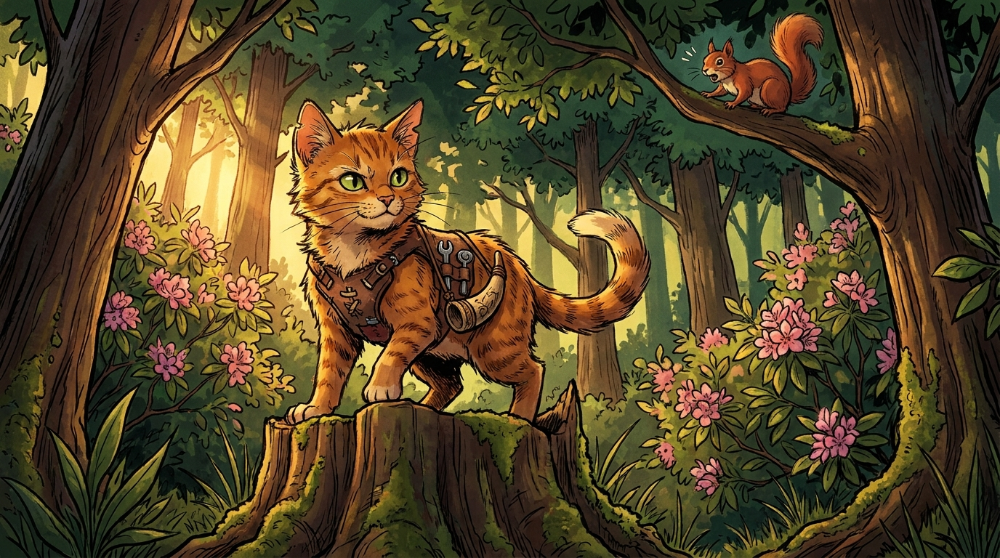
The next day was bright. Acornpaw was glad. His chest still felt heavy from yesterday's story, but the sun helped. The sun always helped.
Smokefur was in a teasing mood. She made them practice their crouching three times before she would tell them anything. Then she made them practice their leaping. Then she sat back and laughed at how tangled Acornpaw got trying to leap and crouch at the same time.
"All right," she said finally. "All right. Sit down. I will tell you about a wild boy."
"A wild cat?" Celerypaw asked.
"Both. Some toms are both. Today I will tell you about a tom named Wildwhisker, and the Twoleg he ran with. They were the kind of cat-and-Twoleg who could not be kept indoors. Not for a moment. Not in any season. They were born to be in the woods."
"What was the Twoleg's name?" Acornpaw asked.
"He was called Davy. Davy Crockett. He was born just up the river from here, in the hills above Greeneville, in a tiny cabin with a leaky roof. He was a wild Twoleg from the moment he could walk. He climbed trees before he could speak. He hunted his first deer when he was eight moons of moons old. He could read the woods the way Markpelt read his own symbols.
"And riding on his shoulder, from the time Davy was a kit himself, was a small striped tom named Wildwhisker. They went everywhere together. They learned the woods together. They could walk a quarter-mile through dense thicket without making a sound — Davy on long quiet feet, Wildwhisker padding behind him with the light step of a cat who has watched his Twoleg for a long time and has learned to copy."
"Did they get into adventures?" Acornpaw demanded.
"They got into nothing but adventures. Once they treed a panther. Once they crossed a flooded river on a single fallen log, with the water roaring under them. Once they spent three nights snowed in inside a hollow tree, and Wildwhisker kept Davy warm, and Davy kept Wildwhisker fed. Once Davy got into an argument with a bear, and Wildwhisker climbed onto the bear's nose and clung there with all four sets of claws, and the bear was so insulted by being climbed by a cat that he lumbered away in a huff and never bothered them again."
Acornpaw was shaking with laughter.
"Davy grew up. He fought in wars. He went to the council houses and made laws. He even traveled to the great eastern city and argued with the great Twoleg chief there about how the Cherokee should be treated. Davy was on Gentlepelt's side, in fact. He was one of the few Twoleg chiefs who voted no against the great walk."
"He was?" Celerypaw said with sudden interest.
"He was. He stood up in front of the great council and said: this is wrong. We must not do this thing. I would rather lose my place in this council than help to do this thing. And he did lose his place. The other Twolegs voted him out for it."
"Then what did he do?" Acornpaw asked.
"He went west. With Wildwhisker on his shoulder. To a far country called Texas, where there was another war going on, against a different enemy. He fought there. He died there. At a place called the Alamo."
Acornpaw was quiet. Celerypaw was quieter.
"Did Wildwhisker die too?" Celerypaw asked finally, in a small voice.
Smokefur did not answer right away.
"There is no certain story," she said. "Some say yes. Some say no. The cats who tell it say that Wildwhisker survived the fight, and that he made his way back to Tennessee on his own paws, all the way, walking by night and hiding by day, and that he came home thin and silent and missing one ear, and that he went and sat on Davy's mother's porch for the rest of his moons, and that he did not let any other cat into his lap until the day he himself walked into StarClan to find Davy waiting."
"I like that ending," Celerypaw whispered.
"Then keep that ending," said Smokefur. "It is yours to keep. We have more than one ending, in this clan, for the cats we love. Pick the one that helps you walk."
Acornpaw was thinking very hard.
"Smokefur. Davy lost his place in the council because he stood up for what was right. He lost everything for that. Was it worth it?"
Smokefur looked at him with her cloudy eyes.
"Acornpaw, my dear. What kind of question is that. Look at us. We are sitting under a porch in Knoxville, two hundred moons of moons later, telling each other Davy Crockett stories. The Twolegs who voted him out — does anyone remember their names? No. But every Twoleg child in this whole country knows the name of the wild boy from the hills above Greeneville. Every cat with any sense knows the name of Wildwhisker. He lost his seat. He kept his name. And his name is what mattered. His name is what came down the moons to land on the small ears of two apprentices today."
She paused.
"When you have to choose, kits. When the moment comes. Choose the name. Always choose the name."
Acornpaw filed this away.
He filed it away very carefully.
It was going to matter to him sooner than he knew.
Davy Crockett (1786–1836) really was born in East Tennessee — on the Nolichucky River, near present-day Limestone, about an hour and a half east of Knoxville. His original log cabin birthplace is preserved as a Tennessee state park. He really was a frontier hunter, soldier, and Congressman from Tennessee, and he really did vote against Andrew Jackson's Indian Removal Act of 1830, which led to the Trail of Tears. He really lost his Congressional seat for it, and he really left for Texas, where he died at the Battle of the Alamo in 1836. There is no historical evidence about Wildwhisker, who is fully invented, but the cats of MarbleClan tell his story anyway.
The Day Everything Changed
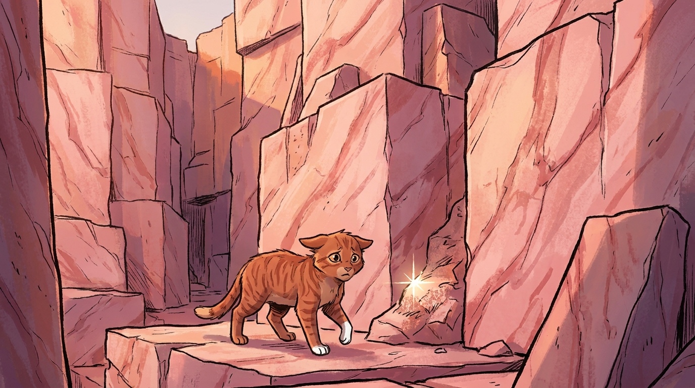
Three sunrises later, the trouble began.
It was a small trouble at first. Trouble usually is.
Acornpaw woke up with an itch in his paws. Not a real itch. The kind of itch that is not in the paws but in the spirit — the itch to go. To move. To be somewhere new. He had been sitting and listening to Smokefur for many days now, and his head was very full, and his legs were beginning to feel like they were about to run off without him whether he came along or not.
Celerypaw noticed.
"You're twitching," she said.
"I am not."
"Your tail is making circles."
"That's not twitching. That's thinking."
"Your tail is thinking in circles. Yes. You are twitching."
"I just want to go somewhere."
"Where?"
Acornpaw thought. "Across the river."
Celerypaw stared at him. "Across the river?"
"To the other side. To see where Whitewhisker walked Gentlepelt down to the boats. I want to see where it happened. I want to see the willow."
"That was many many moons ago. The willow is long gone. There is probably a Twoleg dwelling there now."
"There might be a piece of the willow. Or a stone. Or a sign. Something. I want to see."
Celerypaw considered him for a long moment. "This is not a good idea," she said.
"I know."
"You will go anyway."
"I will."
She sighed, and the sigh was the sigh of an older sister who has known her brother since they were both kits in the same nest, even though they were not really brother and sister by blood, only by circumstance. The sigh was: I love you and I cannot stop you and I am coming with you because you cannot be trusted alone.
"I am coming with you," she said.
"Good."
"But we must have a plan. We must tell Smokefur. We must tell Stonestar. We must take the proper route. We must announce ourselves at the borders. We must be back before moonhigh. I will make a list."
"A list?"
"A list. Of what we will need. Of where we will go. Of when we will be back. I will tell it to you and you will repeat it to me until you have it."
"Celerypaw —"
"No. If we are doing this, we are doing it correctly. You may have the spirit-itch. I have the plan-itch. They go together. They keep each other alive."
Acornpaw bowed his head. "Yes, sister."
She made the list. It was a good list. It said:
— Tell Mothpelt where we are going. (Stonestar will say no. Mothpelt will say yes if we ask the right way.)
— Cross the river at the iron bridge, not by swimming.
— Stay on the small thunderpaths, not the big ones.
— Eat before we go, and bring no food, because food slows you down.
— Be back by moonhigh.
— If anything goes wrong, find a quiet place and yowl three times for help.
— Stay together.
The last item was underlined three times in Celerypaw's mental list.
They told Mothpelt. Mothpelt looked at them a long time. She licked her paws thoughtfully.
"I would prefer," she said, "that you did not go. But I am old enough to know you will go anyway. And I know Celerypaw has made a list. If Celerypaw has made a list, the trouble will be smaller. So go. Be back by moonhigh. Bring me a feather from across the river — there are a kind of bird over there, blue and white, that we do not have on this side. I want to know if there are still some left."
She licked Celerypaw's ear and then Acornpaw's ear and watched them go.
They walked through the morning. Across the iron bridge. Down the little roads. Through a stretch of unfamiliar woods. Past a Twoleg dwelling where a kittypet on a windowsill stared at them as though they were creatures from a story she had not believed in.
It was all going beautifully.
That was Acornpaw's first warning sign, looking back. Things going beautifully are nature's way of warning you.
They came to the place. The place where Whitewhisker had walked Gentlepelt down to the boats. There was no willow. There was a small park, with a bench. There was a stone marker. The marker said something in Twoleg writing that they could not read, but Celerypaw said the right word Cherokee was on it, and so they sat down beside it and they were quiet for a long time.
It was while they were quiet that Acornpaw saw the bird.
Not the blue-and-white feather bird Mothpelt had asked for. A different bird. Bright red. Fat. Stupid-looking, perched on a low branch about twenty pawsteps away. Acornpaw had never seen a red bird so close. He had never seen any bird so close. His tail twitched. His haunches gathered.
"Acornpaw," Celerypaw said quietly. "Don't."
"Just one leap."
"Don't."
"It will be easy. Look at it. It does not even know we are here."
"Acornpaw. We are in unfamiliar territory. We do not chase prey we do not know in country we do not know. That is the rule."
But Acornpaw's haunches had already gathered. The bird's stupid round eye was already in his focus. The world was already narrowing. He could feel his body about to go.
He went.
The bird flew. Of course the bird flew. The bird was a fat stupid-looking red bird that nevertheless had wings and the use of them, and Acornpaw, leaping forward, missed by a whisker and crashed through a small bush and rolled down a bank and tumbled into a ditch.
He came up shaking himself. Annoyed. Embarrassed.
He looked up.
Celerypaw was standing at the top of the bank. She was looking past him.
"What?" he said.
"There is a road there," she said. "A big road. Bigger than the one we came on. And — and a great deal of smoke. And — and the smoke is moving."
Acornpaw turned.
Across a small open field, a great metal monster was moving along the big thunderpath. It was so much louder than a regular monster that Acornpaw had not even registered it as monster-sound — it was monster-thunder. The wind it pushed before it was a huge wind. The smoke it left behind hung in the air.
And he saw, with sudden cold clarity, that he had no idea where he was in relation to the iron bridge.
He scrambled back up the bank. "Celerypaw, which way is the bridge?"
"That way." She pointed.
"Are you sure?"
"...mostly sure."
"Mostly?"
"Acornpaw, I did not chart every single landmark. I was watching where I was putting my paws. We came down a winding little path through woods. I cannot retrace it from here. I need to get back to the marker stone."
"Then let us go to the marker stone."
But the marker stone was not where they had thought it was. They walked back the way they thought they had come. They came to a small ravine they did not remember crossing. They walked along it. They came to a wider stream they did not remember. They turned the other way. They came to a Twoleg dwelling they did not recognize.
The sun was higher than it had been. Acornpaw's stomach felt strange. It was the strange feeling of having no plan, when your sister had specifically made a list of plans, and one of the items on the list had been stay together, and they had stayed together, but every other item had quietly gone wrong while no one was looking.
"We are lost," Celerypaw said calmly.
"Yes," Acornpaw said.
His chest was tight. The shame was rising. He could feel it. It was a hot, heavy feeling behind his eyes. I broke the list. I chased the bird. I did this. I did this. I did this.
He sat down hard.
Celerypaw sat down next to him. She did not say anything for a long moment. Then she said: "You are doing the shame thing."
"I'm not."
"You are. Your ears are flat. Your tail is curled tight to you. You are doing the shame thing."
"I broke the list."
"You did. The list is broken. Now we have a different problem. The problem is get home. The shame does not help with the problem."
"I know."
"Smokefur said. Lost is lost. Lost is not the time for pride. We need help."
Acornpaw closed his eyes. He breathed once. Twice.
He had a strange small inner voice. The voice was not his exactly. It was a voice he had been trying out. The voice said: You did a foolish thing. Foolish things happen to everyone. The shame is the part of you that loves Celerypaw and Mothpelt and the clan. The shame is good. But the shame is not the whole of you. The whole of you can put the shame in your pocket and stand up and walk forward. Stand up. Walk forward.
He stood up. He walked forward.
"Right," he said. "Plan. We need a tall place. From a tall place we can see the river, and once we can see the river, we can find the bridge, and once we find the bridge, we are home."
Celerypaw nodded. "Good. That is good. Where is the nearest tall place?"
They looked around.
A long blue-grey rise of land rose southward from where they stood — a great wall of forested ridges going up and up and up, fading at the top into mist.
"...that is a mountain," Celerypaw said.
"...yes," Acornpaw said.
"That is not a small mountain."
"No."
"That is a very large mountain."
"It will give us a tall place."
"Acornpaw."
"Celerypaw."
She looked at him for a long, long moment. "Stay together," she said. "Item one."
"Stay together," he repeated solemnly. "Item one."
They started walking south, into the foothills, toward MountainClan.
The story of getting lost can happen in any city, but there are some particularly easy places to get lost on the south side of the Tennessee River across from downtown Knoxville — through the green belt, the railroad cuts, and the steep hollows that lead up toward Sevierville. The smart traveler tells someone where she is going. Acornpaw and Celerypaw are following an excellent rule for any lost cat or Twoleg: get to a high place, find a landmark, and walk back toward it.
The Sea Beneath
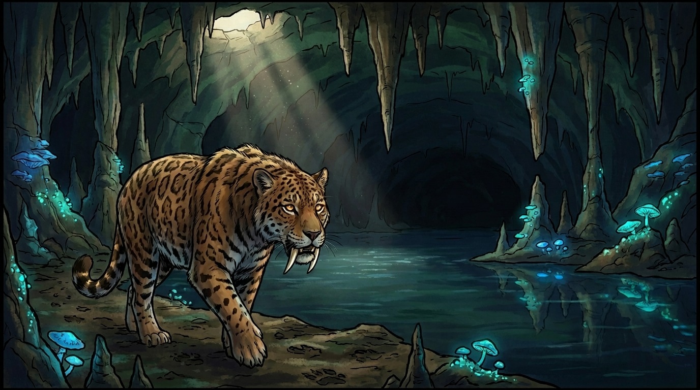
By sunhigh, they had walked into the foothills. The land was steeper now. The smell of the city was thinning. The smell of pine was growing.
They came to a little stream and drank from it. The water was cold and tasted like rocks and like wood and like something deeper. Celerypaw closed her eyes when she drank.
"This is mountain water," she said when she opened them. "We are out of MarbleClan. We are in the in-between."
"How can you tell?"
"Taste."
Acornpaw tried the water again. He could taste only water. "You will get it eventually," said Celerypaw kindly.
They kept walking. The afternoon stretched out. The shadows lengthened. Acornpaw was growing tired in a way he had not known he could be tired — the leg-muscles had a strange hot ache he had never felt — but Celerypaw kept up beside him, and her steady walking shamed him into not stopping.
That was when the ground gave way.
Acornpaw had taken one step too far to the left, and the leaf-cover beneath him was just a thin crust over a sinkhole, and he fell. He fell about the height of three Smokefurs. He landed on cold smooth stone.
"Acornpaw!" Celerypaw's voice came down from above, panicked.
"I'm okay! I'm okay!" he called. He was, mostly. His left flank hurt. His paws stung. His pride was bruised worse than his body.
"I can see you. Can you climb up?"
He looked up. The hole he had fallen through was high above him. The sides were sheer and slick with old moss.
"...not easily. Not at all."
"Stay there. I will find a way down to you. Don't move."
"Celerypaw — Item one! Stay together!"
"I AM staying together! I just have to come down to where you ARE!"
Her voice retreated. Acornpaw sat in the dim light. He looked around.
He was in a kind of cave. A small one. The light from the hole above made everything dim and silvery. Far at the back of the small cave, there seemed to be a dark passage going further into the earth.
He waited. He waited longer.
Something cold moved past his whiskers — the breath of the deeper passage. It smelled of wet stone and old water and of something vast.
He thought of Greatfang. He thought of the underground sea Smokefur had told him about. He thought of how everything in the hollow had a sea beneath it, and how every cat eventually had to walk past one.
A stone clattered above him. Celerypaw's voice: "Acornpaw? I cannot get down without falling. The slope is too steep."
His chest tightened.
"Then don't. Stay up there. I will figure something out."
"Acornpaw, I can hear something from down there. It sounds like dripping. Is it dripping?"
"Yes."
"Is there a passage going further in?"
"Yes."
"You are in a cave system."
"Yes."
"Acornpaw. Listen to me. Caves have multiple openings. Almost all caves do. If there is a passage, follow it. Slowly. Carefully. Stop every fifty pawsteps and listen. If you hear the sound of wind, that means another opening. Walk toward the wind. Do not go where you cannot see your own paws. If you must, go back. Do not go further than where you can return. Are you listening to me?"
"Yes."
"Repeat what I said."
"Caves have multiple openings. Follow the passage. Stop every fifty pawsteps. Listen for wind. Walk toward wind. Do not go where I cannot see my paws. If I must, go back."
"Good. I will run. I will find help. I will be back as fast as I can. Stay alive."
"...Item one?"
"Item one is null and void," Celerypaw said. "We have a bigger item now. Item one is both of us live. GO."
She was gone.
Acornpaw sat in the dim light of the falling-in hole and looked at the dark passage at the back of the cave.
He stood up. He shook himself off. He thought of the small inner voice again. You are afraid. Afraid is fine. Afraid is what an apprentice should be in a cave. Afraid is also what you do not have to obey. Walk toward the wind.
He walked into the passage.
The passage went down. It twisted. It turned. He stopped every fifty pawsteps as Celerypaw had instructed, and he listened.
After a while he could hear it. A soft cool wind. Coming from further down.
He walked toward it.
The passage opened.
It opened into a vast room. He could not see the far side. The ceiling was lost in darkness. And in front of him —
Black water. Mirror-still. Stretching away into nothing.
"The Lost Sea," Acornpaw whispered.
His own whisper came back to him, smaller, from the other side.
He sat down at the edge of the water. He looked into it.
Beneath the water, faint and far, he saw something. A sparkle of stone. Or light. Or — something like an eye. Something old. Something that had been there longer than there had been kits to fall through ceilings into the world.
He thought of Smokefur's story. Greatfang. The cat the size of a wolf. Her footprints still in the mud.
He looked down at the floor of the cave.
There. He could see them. Soft hollows in the cave mud. The shape of a great paw, four times the size of his own. Old. Older than anything else in the world.
He pressed his own small ginger paw into the mud beside Greatfang's print.
For just a moment, he did not feel small.
For just a moment, he felt like the latest in a very, very long line of cats who had stood in this place.
The wind kept moving past him from the dark. He turned and followed it. He walked along the edge of the underground sea. He did not look down into the water again. He kept his eyes on the wind and the wall.
After a long, long time he saw light. A small grey patch of light. Then bigger. Then bigger still. A second opening. A way out.
He squeezed through. He came out into evening light, on the side of a wooded hill, with the smell of pine in his face and the sound of birds and the sound of — someone yowling his name from very far away.
He yowled back.
He sat down. He was shaking. His paws were stinging from sharp stones. He was alive.
He thought of Celerypaw's plan. Caves have multiple openings. She had been right. Of course she had been right. She was Celerypaw.
He sat there until the yowling came closer.
It was Celerypaw. With Mothpelt. With Riverflight. With three MountainClan warriors he had never seen before.
He had been gone for half a day. He had been a long way down.
When Celerypaw saw him, she did not say anything. She walked right up to him and pressed her forehead into his shoulder and stood there for a long moment without saying a word. Her whole body was shaking.
"I followed your instructions," he said into her ear.
"I know," she said.
"I went toward the wind."
"I know."
"I kept the wall on my left paw."
"I know. Acornpaw. I know."
He realized she was crying.
"Celerypaw —"
"You followed the rules I made up out of the pieces of stories. I was not even sure they would work. I made them up to give you something to hold onto. I made them up because if I did not, I was going to fall apart at the top of that hole. And you followed them. And they worked. And you are here."
He had nothing to say to this. He pressed his nose into the top of her head.
The MountainClan warriors stood respectfully back.
It would be a long walk home.
But they were going home.
The Lost Sea, in Sweetwater, Tennessee, is the largest underground lake in the United States. It really was discovered in 1905 by a 13-year-old boy named Ben Sands, who crawled through a small opening and emerged into the great chamber. Inside the cave, scientists later found the perfectly preserved tracks of an extinct Pleistocene jaguar, an animal that vanished from North America over 10,000 years ago. The basic survival rules Celerypaw improvised are real ones: stay calm, follow air currents, do not go where you cannot return, mark your trail. Real cavers carry three sources of light. Real cavers do not go alone.
The Wild Cats of the Hill
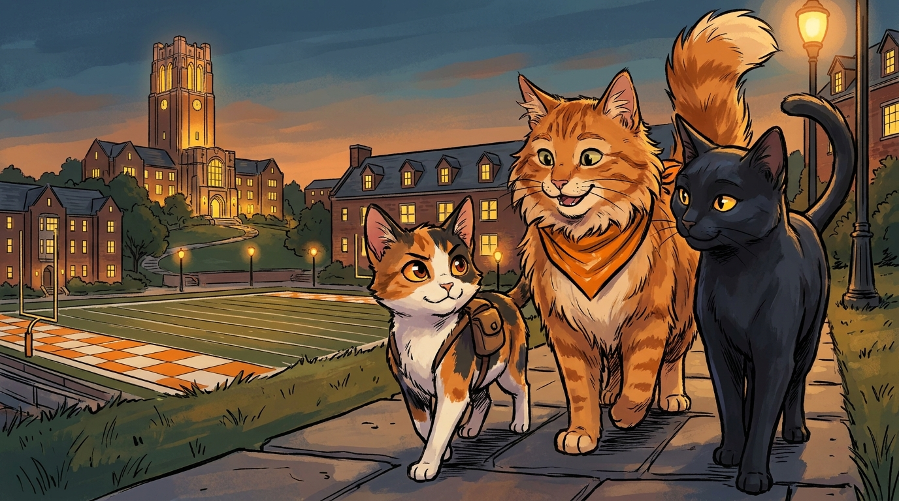
The walk home was not a walk home. The MountainClan warriors led them only as far as the edge of the city, where MountainClan territory ended.
There, in the failing light, the lead MountainClan warrior — a large brown tom with a torn ear and a deep gentle voice — spoke.
"Apprentices. From here, we cannot go. This is your country. You are nearer to it than we are. But night is falling. You cannot make it home tonight. You must find shelter. Listen carefully. Two mile-walks east of here is a great Twoleg place we call the Hill of Many Lights. It is a learning-place for Twoleg kits. There are kind cats there. Two old toms. Find them. Tell them Bearstar's deputy sent you. They will give you a roof for the night."
He bowed his head to them. "You did well," he said. "Both of you. Now go."
And he was gone with the others, melting back into the trees.
The apprentices walked east.
They had to cross a long thunderpath. They waited until there were no monsters and they ran together with their tails low.
They came to the place.
The Hill of Many Lights was a great hill full of grand Twoleg dwellings, built of tan brick and stone. Lights were coming on in many of the windows. Twolegs walked everywhere — most of them very young Twolegs, in groups, laughing and shouting. A great curving path of stone ran up the hill. Strange green-and-white flags hung from poles. A bell rang somewhere far above them.
"Where do we find the cats?" Acornpaw whispered.
"The MountainClan tom did not say."
They padded quietly along the edge of the path, staying out of sight of the young Twolegs.
That was when the first of the cats found them.
A great fluffy orange-and-white tom appeared as if out of thin air, sitting on a low stone wall, washing one paw with great dignity. He paused mid-wash.
"Well, well," he said, in a slow rolling voice. "Two strange apprentices. Wandering on the Hill at moonrise. With the smell of MountainClan on their fur. Now what is the story here, I wonder."
Celerypaw bowed her head politely. "Greetings, sir. We are Acornpaw and Celerypaw, of MarbleClan. We were sent here by Bearstar's deputy. We need shelter for the night."
The orange tom's whiskers twitched in a smile. "Bearstar's deputy is one of my favorite cats in this whole part of the world. If he sent you, you are welcome. My name is Smokey. I am the elder of this place. The students call me their mascot. I do not know what that word means. I think it means very-loved."
A second cat appeared from the shadow of an ivied wall. A sleek black she-cat, smaller than Smokey but with great sharp green eyes.
"And I am Onyx. I am Smokey's deputy and his frequent rescuer. Come with us. We will feed you and tuck you in."
The two old cats led Acornpaw and Celerypaw through a quiet courtyard, around the back of a great brick dwelling, and into a small dim room that had clearly been a Twoleg cellar long ago and had clearly been claimed by cats more recently. There was straw on the floor. There was a tin of water. There were three half-eaten pieces of fish that Smokey said had been left by a kindly student.
"Eat," he said. "Then sleep. Then I will hear your story."
They ate. The fish was wonderful. Acornpaw realized he had not eaten since dawn.
While they ate, Onyx watched Celerypaw with bright considering eyes.
"You are tense for a kit who has just been fed," she said.
"My brother nearly died today."
Onyx flicked her tail. "Ah."
"I made him a list. He broke the list. He fell into a cave. He found his own way out. We are alive. But it was not by the list. I do not know how to think about that yet."
Onyx considered.
"You know," she said, "I am old, Celerypaw. I have watched many many apprentices. The best apprentices I have ever known were always either great list-makers, or great list-breakers. And the very best were always sister-and-brother pairs of one of each."
Celerypaw turned to look at her. "You think we balance each other," she said carefully.
"I do not think it. I see it. It is on you both like a smell. You are the kind of apprentices who become the kind of warriors that hold a clan together for many moons. Do not fight your particular shapes, kits. Acornpaw, you are the kind of cat the clan needs to chase the bird. Celerypaw, you are the kind of cat the clan needs to find the bird afterward. Both are necessary. Neither is enough alone."
Celerypaw was quiet. Acornpaw was trying to swallow a piece of fish that had suddenly grown too big in his throat.
Smokey rolled onto his back lazily. "In the morning," he said, "we will walk you both as far as the great river. From the great river, you can find your way home. For tonight, sleep. Many many strange things have happened to you today. Sleep is the way the body sorts the strange things into the right boxes."
Celerypaw curled up. Acornpaw curled up next to her.
"I am sorry, sister," he whispered.
"I know."
"I will not chase the next red bird."
"You will."
"I will not chase the next strange red bird."
"You will."
"I will check with you before I chase the next strange red bird."
She thought about it. "That is acceptable," she said. "That is the apprentice's compromise."
He laughed quietly into her fur. She laughed back.
They slept.
Far above them, on the highest peak of the Hill of Many Lights, the old tower glowed warm against the dark. Down in the valley, the river curved past Knoxville, carrying the day away. And on a porch in MarbleClan territory, an elder with cloudy eyes lay awake, listening to the wind, waiting for news.
The University of Tennessee, Knoxville sits on a hill on the south side of downtown — a real "Hill" in the local way of speaking. The campus has long been home to friendly stray cats fed by students. The university's mascot is a Bluetick Coonhound named Smokey, but cats around campus have always borrowed his name. The big tan-brick building with the famous round windows is Ayres Hall, on top of the hill — visible from much of the city. The school colors are orange and white, and the football team is called the Volunteers, which is why the campus often feels orange on game days.
The Light That Stays On
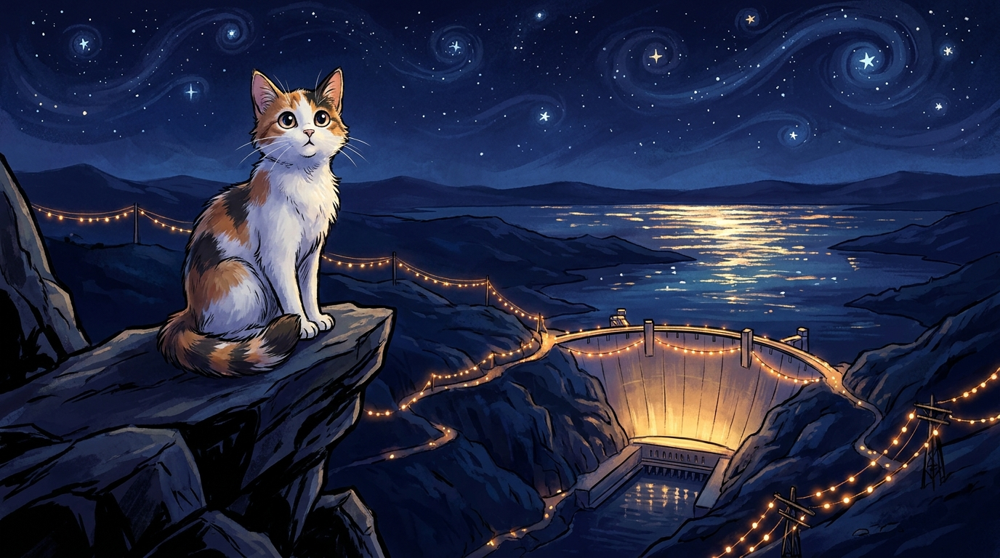
In the morning, Smokey and Onyx walked Acornpaw and Celerypaw down to the great river, just as promised. Onyx led the way; Smokey brought up the rear with stately paws. Twoleg students passed them on the stone path and paid no attention. Cats on the Hill of Many Lights were too common to notice.
At the river, Smokey stopped and turned to them with great seriousness.
"From here," he said, "you go upstream. Follow the river. The river will take you to the heart of your hollow. You will see it: tall Twoleg dwellings, a glowing gold ball above all the rest. That is your country."
"Thank you," Celerypaw said. She bowed her head deeply.
"Thank you for the fish," Acornpaw said. He bowed his head deeply too.
Onyx flicked her tail. "Acornpaw."
"Yes?"
"One more thing. Listen carefully."
He listened.
"You will be back this way one day. Many times. The Hill is not done with you. I do not know how to explain why I know this. But it is true. When you come back, look for me. I am usually under the great oak by the brick dwelling with the tower. I will give you tea."
He blinked at her, confused. "Cats do not drink tea."
"I know," she said gravely. "It is a metaphor."
She walked away. Smokey followed, but he turned once over his shoulder and laughed, and the laugh was warm.
The apprentices walked upstream.
The day was bright. The river ran wide and calm beside them. Acornpaw's paws hurt and his flank still ached from yesterday's fall, but his heart felt light. Celerypaw walked beside him and from time to time would press her shoulder briefly into his, just to confirm he was still there, just to feel it.
They walked a long time. The sun moved across the sky.
Around mid-afternoon, they came to a strange thing.
A great wall of pale concrete stretched across the river ahead of them. Higher than any Twoleg dwelling they had ever seen. A small lake had built up behind it, calm and silver. Strings of black ropes ran out from the top of the wall in many directions, draping across the hills, going off into the distance like the threads of an enormous spider's web.
"What is that?" Acornpaw said.
Celerypaw stared. "I do not know."
A small sleek brown she-cat appeared on the path ahead of them. She had been sunning herself on a flat rock and had clearly heard them coming.
"Greetings, kits," she said. "I am Springflight, of the cats of the Big Wall. You stare at the wall. May I tell you what it is?"
"Please," Celerypaw said.
Springflight stretched. "It is a dam. The Twolegs built it many many moons ago, in a time when this whole valley was poor and dark and could not find work. They built it to do two things. One: hold back the river. Two: capture the river's strength. The river falls from one side of the wall to the other, and as it falls, the Twolegs catch its strength in great spinning machines. The strength they catch becomes light."
"Light?" Acornpaw asked.
"Light, my kit. Watch tonight. Walk to a high place at moonhigh and look out. Every light you see in every Twoleg dwelling — every streetlamp, every porch, every window — every one of them is the river falling. The river runs through the wall and comes out the other side as light, in every Twoleg dwelling for many many many mile-walks around. The Twolegs call this electricity. It is the most magical thing they have ever made."
Celerypaw's eyes were huge. "You mean the lights are alive with the river?"
"Exactly so. Every light in your hollow is a river running."
Acornpaw thought about this. He thought about all the streetlamps coming on at dusk when he was a kit. He thought about the warm windows of his own Twolegs.
"Springflight," he said slowly, "if I follow the lights — if I follow the strings of black ropes you mentioned — they will take me to all the dwellings, won't they? They will take me to the Twolegs?"
"Yes."
"Then they will take me home."
Springflight smiled. "If you know which lights are your lights, kit. Yes. They will take you home."
She paused. "There is a story about this dam. Would you like to hear it?"
Celerypaw and Acornpaw sat down. Of course they wanted to hear it.
"Once," said Springflight, "this whole valley was hungry. A great Twoleg sickness had swept across the country — not a body sickness, a money sickness. The Twolegs had no work. They had no food. The cats who lived in the valley grew thin. The kits had nothing in their bellies.
"A great chief came to the valley. He looked around. He said: we will build a wall on the river. We will catch the river's strength. We will hire every hungry Twoleg in this valley to help us build it. And so they did. They built this wall. And they built many other walls on other rivers. And the rivers became light. And every dwelling in this valley got the magical light, even the smallest cabin on the highest ridge. And the hungry Twolegs were not hungry anymore, because they had work, and the kits had food in their bellies, and the cats grew sleek again."
"That is a wonderful story," Acornpaw said.
"It is a true one," said Springflight. "And there is a second part. Listen.
"After the wall was built, a small clan of cats came to live near the wall, to keep the mice out of the great spinning machines. Cats run the dam, the Twolegs say in this valley, although the Twolegs say it as a joke. It is not a joke. We do run it. My grandmother's grandmother was the first chief mouser of this place. I am the most recent. We have been here as long as the lights have been on, and the lights have been on a long time now. I am proud of my work."
Celerypaw bowed. "Thank you for sharing your story, Springflight."
"Thank you for sitting still long enough to hear it. Most apprentices do not. Now go. The river will take you home. Stay close to the bank. Sleep at the right place — not too close to the thunderpath. And never, never sleep on the great black ropes. They are warm and they will tempt you. Resist."
She winked at them. She padded off across the flat rock and was gone.
Celerypaw and Acornpaw walked on along the river.
The afternoon was wearing down. The light was slanting low. The shadows were getting long.
They came around a bend, and Acornpaw stopped.
In the distance, very far away but unmistakable, glowing softly even in the late sun: a little gold dome on a tall stem. The Sunsphere.
His own hollow. The heart of MarbleClan.
He did not say anything. He just stared.
Celerypaw stood beside him. She did not say anything either.
After a long moment Acornpaw said, very quietly: "I want to go home."
"I know," Celerypaw said. "Come on."
They walked on, into the long evening.
The Tennessee Valley Authority (TVA) is one of the largest electricity providers in America. It was created in 1933 as part of President Franklin Roosevelt's New Deal, during the Great Depression. The TVA built a series of dams across the Tennessee River and its tributaries — including Norris Dam, Fontana Dam, and others — that brought electricity for the first time to vast stretches of rural Appalachia. The work also gave jobs to thousands of out-of-work Tennesseans. To this day, almost every light in East Tennessee is powered by the river.
The Secret City
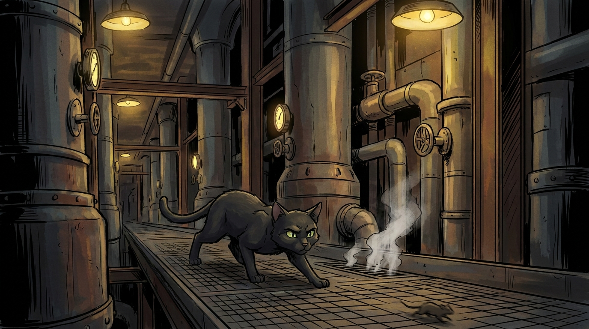
That night they slept in a hayloft. Acornpaw could not believe how good hay smelled. Celerypaw insisted that they take turns keeping watch. Acornpaw took the second watch. From the open hayloft door he could see, very far away, the warm light of his own hollow.
He thought about Springflight's words. Every light is a river running. Somewhere out there, his own Twolegs were sitting in a Twoleg dwelling under a light powered by the river. Somewhere out there, Mothpelt was probably still awake, worrying. Somewhere out there, Smokefur was lying in the elders' den, listening to the wind.
He thought of all of them. He let them be there in his head all at once, like little pieces of light. He was not lonely.
In the morning, they walked on.
The land changed. The river curved away to the south, and the apprentices had to make a choice — follow the river around the long curve, which would take them many extra mile-walks, or cut north across an unfamiliar ridge, which Springflight had warned them might lead them into the territory of yet another clan they did not know.
"North," Celerypaw decided. "We are tired. North will be faster. If we are lost again, we are lost again. We will deal with it."
"Item one?" Acornpaw said.
"Item one," said Celerypaw firmly. They padded north together.
The ridge was not as bad as they had feared. The path was clear. The land beyond it opened into a broad valley with a strange clean orderly Twoleg town — wide thunderpaths laid out in patterns, identical small Twoleg dwellings in long rows, great bright signs and great bright Twoleg dwellings full of glass.
A cat appeared on the path ahead of them. A black tom. Small. Very still. Very quiet. He was watching them with eyes the color of clear ice.
Acornpaw felt a strange jolt. He had heard about a black cat with quiet paws in one of Smokefur's stories. He had heard a name. He had heard —
"Quietpaw?" he whispered.
The black tom blinked once, slowly. "That is not my name," he said. His voice was as soft as his paws. "That was my great-great-great-grandfather's name. I am called Lampblack. But you are right that he was my ancestor. How does an apprentice from MarbleClan know his name?"
"Smokefur told us," Celerypaw said.
Lampblack's whiskers moved in a small smile.
"Of course she did. Smokefur knows everyone. Welcome to Quietclan, apprentices. You are tired and you are hungry. Come."
He led them through the strange clean valley to a place that was a kind of porch behind a great square Twoleg dwelling. On the porch were three other cats — two she-cats and a thin grey tom. They greeted Lampblack with a small respectful nod. He nodded back.
"Apprentices from MarbleClan," he said. "Lost. Returning."
The three Quietclan cats made room. They brought water. They brought a small share of food.
"Eat," said one of the she-cats. "Then I will tell you the story of this place. It is a strange story. Smokefur has surely told you the bones of it. But we tell it differently here, in the house where it happened. Listen."
They ate. They listened.
"This place," said the she-cat, "is called Oak Ridge. Long ago, there was nothing here. It was just a quiet valley with a few small farmhouses and a cold creek. Then, in the middle of a great great war that was burning across the whole world, a thousand great Twoleg machines came rolling into this valley. They tore up the cold creek. They tore up the small farmhouses. They built — overnight, almost — a whole new Twoleg town. Square dwellings, wide thunderpaths, towers and chimneys and great long buildings the size of mountains. Tens of thousands of Twolegs poured in to work in the long buildings.
"And not one of them — not one — knew what they were building."
Acornpaw stared. "How is that possible?"
"It was kept secret. Each Twoleg knew only one small piece of the work. Turn this valve. Watch this dial. Sweep this floor. Carry this box. Nobody put it together. The Twoleg leaders kept it that way on purpose. Many of the Twolegs lived here for many moons and never knew."
"Never knew?" Celerypaw echoed.
"Never knew. Until the war ended. And then they read it in the news. And then they understood what they had been doing. And many of them sat down on their porches and did not get up for a long time."
"Why?" Acornpaw whispered.
"Because what they had built — what they had helped to make — was so big that it ended the war in a single afternoon. And ending the war in a single afternoon is a great thing and a terrible thing at the same time. Ask anyone who has lived through it. They will tell you."
There was a long silence.
"And the cats?" Celerypaw asked finally. "What did the cats do?"
Lampblack answered. "The cats kept the mice out of the wires. That was our work. My great-great-great-grandfather Quietpaw walked the great long building called the K-twenty-five every night. The K-twenty-five was so long it had a curve in it, to follow the curve of the world. He kept the mice out of the wires. Without him, the work would have failed in many small accidental ways. He did this his whole life. He never left this valley. He died here. He is buried under a flowering pear tree near the third entrance to Y-twelve. We tend the pear tree. We always will."
Acornpaw was very moved. He had not thought, when Smokefur had told him the story of Quietpaw, that there would still be a great-great-great-grandson, here, telling it forward.
"What is the name of the work?" Acornpaw asked.
Lampblack looked at him for a long moment. "The Twolegs called it the Manhattan Project. It was the building of the first great fire. The fire that lives in the heart of the sun. The Twolegs wanted to take that fire and put it in a small box and end a great war. They did. They ended the war. The fire has been with the Twolegs ever since. They have not used it in war since that day. We pray they never will. We cats pray, Acornpaw. We pray for the Twolegs to keep the fire in the box."
He paused. "That is the story of this place. It is a story with many feelings in it. It is not all good. It is not all bad. It is true. And true stories — Smokefur surely told you — true stories carry both."
Celerypaw and Acornpaw sat for a long time and let the story settle.
When the silence had finished its work, Lampblack stood up.
"You are still many mile-walks from your hollow. Come. We will set you on the right path. You will be home tomorrow."
He walked them out of Oak Ridge as the sun was going down. He pointed eastward.
"That way. Follow the warmth. Your hollow has a warmth all its own. A cat born in MarbleClan can always feel it. Walk toward it."
Acornpaw turned his nose into the wind. Lampblack was right. There was a warmth. Faint, but present. The warmth of the brewery hops. Of the brick streets. Of the porch he had been born under.
"Thank you, Lampblack."
"Thank Quietpaw," said Lampblack quietly. "He is the reason any of us are here."
He turned and was gone.
Acornpaw and Celerypaw walked east, into the dusk, toward the warmth.
Oak Ridge, Tennessee, was built in 1942 in absolute secrecy for the Manhattan Project. At its peak it housed 75,000 people, many of whom had no idea what they were really building. The K-25 building was the largest building in the world at the time of its construction, more than a mile long. Workers at Oak Ridge enriched the uranium that was used in the bomb dropped on Hiroshima in August 1945, ending World War II. Today, the American Museum of Science and Energy in Oak Ridge tells the story honestly — both the achievement and the moral weight. The Manhattan Project is now a National Historical Park, with sites in Oak Ridge, Los Alamos, and Hanford.
The Singer of the Mountain
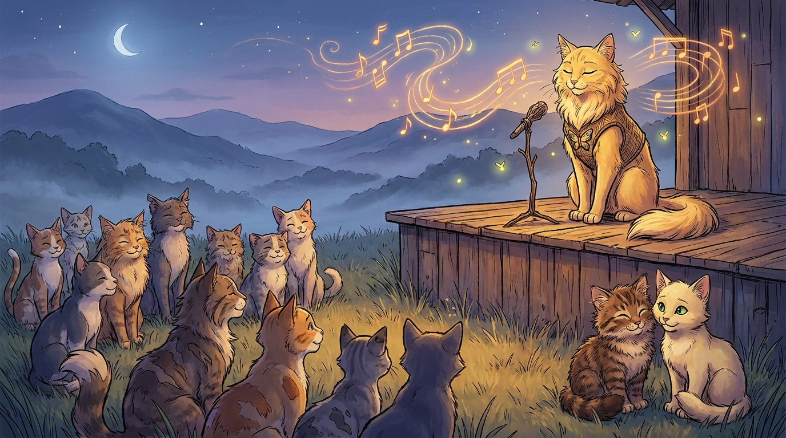
That night they slept in an old shed behind a Twoleg cabin that smelled of wood smoke. They were too tired to take watches. They slept curled tight against each other.
In the deep middle of the night, a strange thing happened. Celerypaw began to dream.
She dreamed she was flying. (She often dreamed she was flying — Celerypaw was a lucid dreamer, which means she sometimes woke up inside her dreams and could choose what happened next.) She flew low over the mountains. The blue smoke rose around her wings. The fireflies sang together in the valley below her. She flew east, toward home.
She flew over a small mountain town. Twoleg dwellings clustered in the valley. Music came out of one of the dwellings — bright twangy music, pulled out of a stringed instrument, singing along in a high silver voice.
She circled down toward the music.
A great gold-and-white she-cat was sitting on a wooden mountain stage. Her fur was long and soft. Her eyes were deep and warm. She was singing.
The song was about going home. It was about an old paw road and the smell of mountain laurel and a porch where someone you love is waiting up. It was a song that carried in it everything Celerypaw was feeling about her own porch and her own Mothpelt and her own Smokefur.
The gold cat finished her song. She looked up. Her eyes met Celerypaw's, even though Celerypaw was a flying ghost in a dream.
"Hello, kit," said the gold cat.
"Hello," said Celerypaw. "Who are you?"
"I am Singer of these mountains. The Twolegs call me Dolly. The cats call me by what I do. Why are you flying through my mountains tonight?"
"I am lost," said Celerypaw, "but I am almost home. I just have one more long day's walking. I am very tired."
Singer smiled.
"Then sit down for a moment, kit. I will sing you another. You can take it with you. You will need it tomorrow."
Celerypaw sat down on the wooden stage. Singer began another song. It was a gentler song than the first. It was a song about being a big sister and looking after a little brother and how the looking-after never gets any easier and never feels any less worth it. Celerypaw felt the song move through her like warm water. When Singer finished, Celerypaw was crying.
"Thank you," she said.
"Of course, kit. Songs are for sharing. That is the point of them. Take this one. Take it home. When you need it tomorrow, you will have it."
"Why are you here, in the mountains? Why do you sing?"
Singer looked off across the mountains. Her gold fur glowed in the dream-light.
"I was born in these mountains, kit. In a small dwelling on a hill, with so many sister-cats around me I could hardly remember all our names. My family was poor. The mountain was rich, but the Twolegs in it were poor. We did not have much. What we had was each other and music. So I made music. I made it all my life. I made it about the mountains. About my mother. About my father. About my sisters. About kits who have no shoes and old men who fish in the river and women who work hard and laugh harder. I made it because the mountains deserve music. Mountains are full of stories that nobody tells. Somebody had to tell them."
"Like Markpelt," Celerypaw whispered. "He saw the missing thing and he had to build it."
Singer turned her head sharply, with great interest. "You know Markpelt's story?"
"Smokefur of MarbleClan tells it."
"Ah. Smokefur. I remember Smokefur. She came up to one of my concerts many many moons ago, when she was young and her green eyes were sharp. She sat in the back row and did not move all night. After the concert, she came up to the edge of my stage and bowed, and she said: Thank you for telling the stories. I never forgot her. Tell her — tell her Singer remembers her green eyes."
"I will."
"Now go, little kit. Wake up. You have a long walk tomorrow. You will use my song. I gave it to you for a reason."
Celerypaw woke up.
It was dawn. Acornpaw was still asleep beside her, his ginger fur warm. The shed smelled of wood smoke and old hay. Outside, the eastern sky was beginning to glow.
Celerypaw lay there for a long moment.
The song was inside her. She could hear it whenever she wanted it.
She licked Acornpaw on the nose. "Wake up, brother. We are going home today."
He opened his eyes. "How do you know?"
"I had a dream."
"...what kind of dream?"
"The kind that knows things."
He blinked at her. "You have those?"
"Sometimes." She looked away modestly. "Just sometimes."
They walked east.
Dolly Parton was born in Sevierville, Tennessee, in a small one-room cabin on the bank of the Little Pigeon River, the fourth of twelve children. She grew up poor in the Smoky Mountains. She has been a singer, songwriter, businesswoman, and philanthropist for over sixty years, and she famously built Dollywood, the theme park near Pigeon Forge, partly to give jobs back to the people of the Smoky Mountains where she grew up. Her Imagination Library has given over 200 million free books to children around the world. She has written more than 3,000 songs — including "I Will Always Love You" and "Coat of Many Colors" — and she has said many times that she sings because the mountains are full of stories that nobody tells, and somebody had to tell them.
The Year the Whole World Came
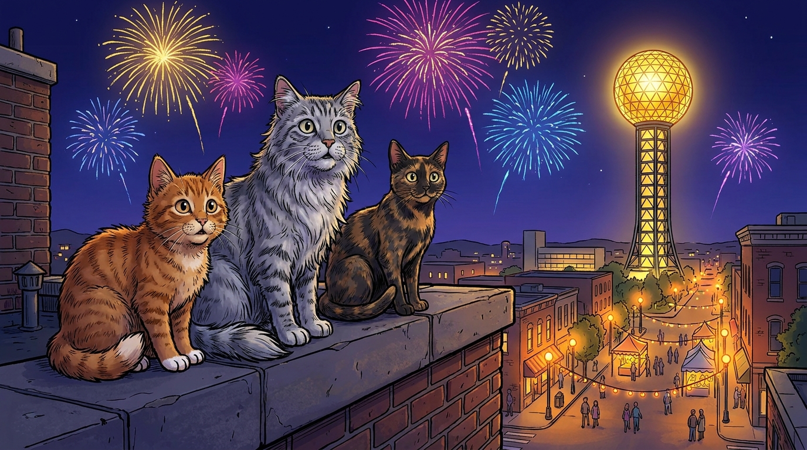
By mid-morning the Sunsphere was no longer a distant gold dot. It was tall and present, glittering on its long stem ahead of them. The hollow itself was rising up around them — the brick streets, the brewery smell, the familiar churn of the river just beyond the trees.
Acornpaw began to recognize landmarks. He had not been on this side of MarbleClan often, but he knew the long stone wall, and the way the road bent past the great old depot. They were almost home.
Smokefur was waiting for them on the bluff above the river, sitting in the same place she had sat many days ago when she had shown them the four directions.
She did not get up when they came toward her. She looked at them for a long moment with her cloudy eyes.
"I knew you would come back this way," she said.
"You knew?" Acornpaw said.
"I am older than the oak. There is something I know about apprentices who get themselves lost. They almost always come home through this bluff. I do not understand it. I think it has to do with the wind. I have been sitting here for two days."
"Two days?"
"Mothpelt has been bringing me food."
"Smokefur, I am sorry," Acornpaw said, and his throat closed up a little when he said it.
Smokefur looked at him steadily. "What for?"
"For going. For breaking the list. For making everyone worry."
Smokefur considered.
"You are partly sorry for the right things, kit. You are sorry for making everyone worry. That is a real sorry. That is the kind a cat should hold. But the rest — for going, for breaking the list — those are not the right sorries. Those are also the moments where your courage came from. You cannot pull a thread out of a rope without breaking the rope. The going and the courage are the same thread. So no. Do not be sorry for the going. Be sorry for the worrying. Make it up to those who worried."
Acornpaw nodded. The shame in his chest moved a little. It got smaller. It made room for something else.
Smokefur turned her cloudy eyes on Celerypaw.
"And you, kit. What did you learn?"
Celerypaw thought.
"I learned that you can make a good list and have everything go wrong anyway. And that the list still helped, even though it did not work, because it was the list that gave us the courage to start."
"Yes."
"I learned that I can be more brave than I thought. When I had to. When my brother was in the cave."
"Yes."
"I learned that there is a Singer in the mountain who knows my dreams."
Smokefur startled. Her cloudy eyes widened. "You met her?"
"I dreamed her."
"Ah. Ah. Of course. She comes in dreams. I had not thought she would come for you. You are very young." She looked at Celerypaw with new respect. "What did she tell you?"
"That the mountains are full of stories nobody tells, and somebody had to tell them. And she gave me a song."
"Keep the song," said Smokefur softly. "Keep it close. You will need it more than once."
She looked across at the Sunsphere, glittering in the morning sun.
"There is another story I have not told you yet," she said. "I think it is a good one for now. It is the story of the Year the Whole World Came."
She turned to face the apprentices fully. "Once," she said, "the Twolegs of this hollow decided to throw a great party. Not just for our hollow. For the whole world."
Both kits leaned in.
"Twenty-two countries came. The party lasted a whole greenleaf. They built strange tall buildings and rivers that ran the wrong way and a tower with a gold ball on top that you could ride up inside in a glass cage. Eleven million Twolegs came to see it. The line for the cage stretched around three blocks."
"Eleven million?" Acornpaw said.
"That is the number they tell. Cats are not good with numbers that big. It was a lot. The cats of MarbleClan stayed up on the rooftops the whole greenleaf, watching."
"What did they see?"
"Music every night. Fireworks like StarClan was throwing a tantrum. A glass tower full of Twolegs from a country called Hungary doing a dance that made no sense. A drink called Cherry Coke was poured for the very first time at a stand near the Sphere. A whole exhibit of robots — metal kittypets that moved on their own. And the gold ball, the gold ball, the gold ball, all greenleaf long, glowing over everything."
"Does it still glow?" Celerypaw asked.
"It does. Most of the rest of the party is gone now — the buildings taken down, the strange rivers filled in. But the Sphere stayed. The Twolegs could not bear to take it down. It was too good."
"Why did they have a party?" Acornpaw asked.
Smokefur considered this carefully.
"Twolegs have a great sadness in them sometimes. They forget that the world is good. So every once in a while, they have to throw a party so big that the whole world comes. After it ends, they remember for a while. Then they forget, and they have to do it again. It is a kind of medicine. Cats do not need it. We remember the world is good every morning, when we wake up."
She looked at Acornpaw a long time. "You forgot, kit. For a moment. When you were lost. Did you not?"
He nodded.
"And you remembered again."
He nodded.
"Then the lostness was a kind of party too. It was a small private party that you threw for yourself, and StarClan came, and so did Celerypaw, and so did Singer, and so did Quietpaw's great-great-great-grandson, and so did MountainClan, and so did Smokey and Onyx of the Hill of Many Lights, and so did I, sitting here on the bluff for two days. Eleven million cats and Twolegs came to your party, kit. You did not see them. They were there. They are always there. The world is full of them. And now you have come home."
Acornpaw could not speak.
Celerypaw put her tail across his back.
In 1982, Knoxville hosted the World's Fair, with the theme "Energy Turns the World." Eleven million people visited. Twenty-two countries built pavilions. Cherry Coke was first sold there. The touch-screen computer made one of its public debuts. The Sunsphere — the 266-foot-tall gold-glass tower in World's Fair Park — became the city's lasting icon. You can still ride up it for free. The view goes for miles.
The Two Sides of One River
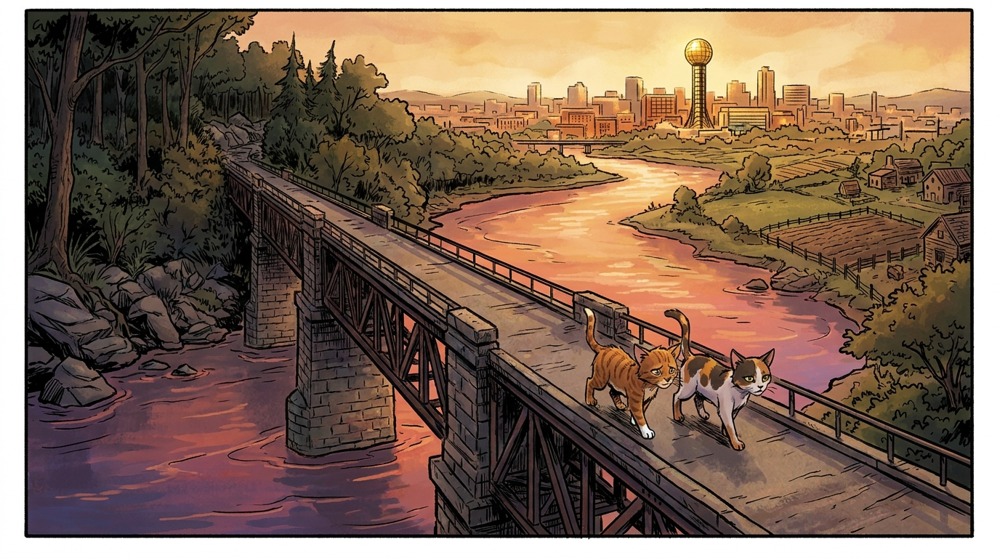
The way home was not finished, even now. Smokefur was too old to walk back down the bluff alone. The apprentices stayed with her. They walked her slowly, slowly down the path. They came to the iron bridge over the river — the same iron bridge they had crossed at the start of their journey, what felt like a moon ago but had only been a few sunrises.
Smokefur paused on the bridge. She put her old paws on the cold iron.
"There is one last story," she said. "I want to tell it to you here, on the bridge. Because the bridge is the right place for it."
They sat. The river slid past beneath them, wide and brown and patient.
"This bridge," she said, "and every bridge across this river, was built for one reason: to bring two sides together. The river is one river. But it has always had two banks. And the two banks have not always agreed."
She paused.
"Long ago — when Whitewhisker was already old — there was a great war between the northern Twolegs and the southern Twolegs of this country. I have mentioned it before. Today I will tell you a piece of it. The piece that belongs to us.
"Tennessee was a southern state. Most of Tennessee — the western parts, the cotton parts, the warm flat parts — sided with the south. But East Tennessee — the mountain parts, our parts — was different. The Twolegs here did not own the kinds of farms the southern Twolegs were fighting about. They were small farmers. They were not slave-holders. Most of them did not want to leave the country they were already in. They wanted to stay loyal to the north.
"And so when the southern leaders tried to gather East Tennessee Twolegs into the southern army, many many of them refused. Some of them ran north and joined the northern army instead. Some of them hid in the deep hollows and waited the war out. Some of them just stood on their porches and shook their heads. And the southern leaders, when they came through East Tennessee, treated the local Twolegs like enemies in their own country.
"The cats of MarbleClan in those days were torn in half. Some of us followed our Twolegs north. Some of us stayed with our Twolegs at home, trying to keep the kits safe. There was a fight here in Knoxville one autumn — a fight at a place called Fort Sanders, just on the west side of the river. The southern army came up the river. The northern army held the fort. The fight lasted only a few hours but the cats remember it. The fort was held. The southern army went home. The war went on for many more moons. And East Tennessee, when the war finally ended, was on the winning side."
"That is a strange thing," Acornpaw said. "To be on the winning side of a war when your whole country was on the losing side."
"It is. It made for a very strange peace. The southern cats and the northern cats had to learn to live together again. The brothers who had fought against each other had to drink from the same stream. It was not easy. It is still not easy. There are things in our hollow today — small things, the way a particular family looks at another particular family across the brewery yard — that go back to which side they were on in those years. Cats remember. Cats remember for a long time."
"Does the remembering ever end?" Celerypaw asked.
Smokefur looked down at the river.
"It does not end. It changes. It softens. New things grow on top of the old things. The grandkits of the cat who fled south meet the grandkits of the cat who fled north and they become best friends and never know why their grandmothers used to look the other way at the marketplace. That is the way of it. That is also the river. The river forgets nothing — if you watch closely enough, you can see the shape of every flood it has ever had — but the river still flows. Both things are true."
She paused, and looked at the apprentices closely.
"You two have just had a small private war, in a way. You went somewhere you should not have gone. You got lost. You were afraid. You were angry, perhaps, even with each other. You are home now. The hardest part of homecoming is letting the small private war end. You are home. Let the war end on the bridge."
Acornpaw turned to Celerypaw.
He had not realized he was angry. But he was angry, a little. He had been angry that Celerypaw had been right about everything. He had been angry that Celerypaw had made a list and the list had become true. He had been angry that he was the one who had chased the bird and broken the list and almost lost both of them.
He looked at her now.
"I'm sorry I chased the bird," he said. "I'm sorry I broke the list."
"I'm sorry I told you not to chase the bird in the I-told-you-so way," she said. "I should have just been excited with you."
"You were trying to keep me safe."
"Yes. But there are warmer ways to do it."
He nodded. She nodded.
They touched noses on the iron bridge above the great river that forgot nothing.
Smokefur watched them with her cloudy eyes and said nothing, but the corners of her old mouth lifted.
"Now," she said. "Home."
They walked the rest of the way home together.
During the American Civil War (1861–1865), East Tennessee was famously pro-Union, even though Tennessee as a whole seceded with the Confederacy. Many East Tennesseans crossed Confederate lines to join the Union army. The Battle of Fort Sanders, fought in Knoxville on November 29, 1863, was a major Confederate defeat. The fort itself stood roughly where Fort Sanders neighborhood is now, just west of downtown. Knoxville was held by Union forces for the rest of the war.
The Voice in the Theatre
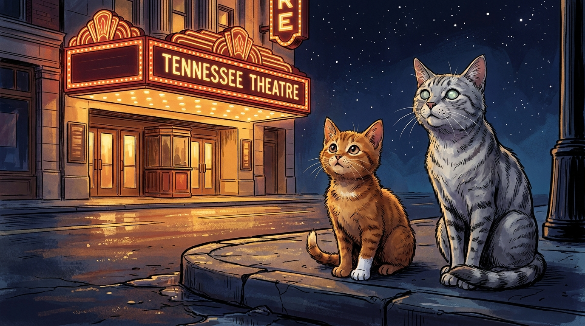
Mothpelt was waiting at the porch. She did not say anything when she saw them. She did not need to. She licked Celerypaw's ear and then Acornpaw's ear and then sat down hard, like a cat whose legs had been holding her up only out of stubborn habit.
"Three days," she said, when she could speak. "I have aged three moons in three days."
"I'm sorry, Mothpelt," they both said at once.
"I know." She sighed. "I know."
That night Stonestar called them to him. He was a great grey tom with the scar across his muzzle. He looked them over. He looked them over for a long time.
"Apprentices," he said finally. "You went where you should not have gone. You returned. You found your way home. You did not lose each other. You did not lose yourselves." He paused. "These are the qualities of warriors."
He paused longer.
"You are very young for the warrior name. Younger than most of us were. But you have walked further than most of us walked at twice your age. And the clan needs warriors. So I will offer you the choice. Take the warrior name now, with the responsibilities that come with it — or wait until you are older, as is more usual."
Acornpaw and Celerypaw looked at each other. Celerypaw spoke first.
"Stonestar. We will take the name. But we ask one thing. We ask that the naming happen tonight — tonight, in front of the great Twoleg theatre, the one that stands at the south edge of the hollow. We have a reason. Smokefur will explain. She has a reason too."
Stonestar looked at Smokefur. Smokefur nodded once.
"Then it is done," said Stonestar. "We go to the theatre at moonhigh."
The Tennessee Theatre was glowing red and gold, the way it always glowed on a show night. The great old marquee was lit with hundreds of warm white bulbs. Twolegs were streaming in. Acornpaw and Celerypaw, with the rest of MarbleClan trailing behind them in a quiet line, came to the curb across the street and sat down.
The whole clan sat with them. Smokefur. Mothpelt. Stonestar. Riverflight, Pinetail, Brackenfoot, Hollyflight. Even some of the older kits crept up to watch.
From inside the theatre came the muffled rumble of voices and music and laughter. Hundreds of Twolegs in there, all turned the same direction, watching a great glowing rectangle. A great voice — old, weathered, famous all over the world — boomed out over them, telling a story. The Twolegs roared with laughter.
"Who is that?" Celerypaw whispered.
"A Twoleg storyteller," Smokefur said. "A very old one. He tells stories of ships that fly between the stars. Your housemates Eli and Rosie love him, I think. The Twolegs love him. They have come from all over to listen."
"Like a World's Fair," Acornpaw said.
"A small one. A theatre is a tiny World's Fair, kit. And a story is the gold ball at the top of it."
Stonestar stepped forward. He spoke softly so that the Twolegs would not hear. But all the cats heard.
"I, Stonestar, leader of MarbleClan, call upon my ancestors to look down on these two apprentices. They have walked further than most apprentices ever walk. They have learned their hollow. They have learned its edges. They have learned that a clan is held together not by paws but by stories. They have crossed waters they did not know how to cross. They have come home. They are ready for the warrior name."
He turned to Acornpaw. "Acornpaw. From this moment, you will be known as Acornleap. Because you leap when others would not. Because your leaping is your courage and also your danger. Because you must learn, all your life, to leap toward the right things."
Acornleap bowed his head. His new name felt strange in his ears — and also exactly right.
He turned to Celerypaw. "Celerypaw. From this moment, you will be known as Celeryflight. Because your wisdom flies ahead of you. Because you have the gift of seeing where things are going to land before they get there. Because you must learn, all your life, to let your brother land where he must, and to be there to greet him when he does."
Celeryflight bowed her head. Her new name felt like an old coat that had always fit her.
The clan touched noses with each new warrior, one at a time. There were no words. There did not need to be.
Behind them, the theatre erupted in laughter and applause. Above them, the real stars were coming out — first one, then two, then a whole spreading dust of them, the way StarClan always comes when you finally bother to look up.
Acornleap closed his eyes.
He could feel the river running past, and the marble shining quietly under the hills, and the mountains breathing blue smoke in the distance, and the gold ball glowing over downtown, and the deep cold breath of the underground sea, and the hum of the great dam carrying the river's strength out into a thousand small lights, and Singer of the mountain humming her old songs in her sleep, and Lampblack tending the pear tree above his great-great-great-grandfather's grave, and Smokey and Onyx asleep on the Hill of Many Lights, and Bigheart's torn ears in his old porch ghost still listening for the wind from the south, and Whitewhisker's purr coming up faintly through the rooftop tiles of the old fort, and Markpelt's eighty-five symbols flowing down from the western country in books that were still being written, and Gentlepelt walking under the willow somewhere in a world that no longer was.
His own hollow. His own clan. His own home.
He opened his eyes.
The stars wheeled slowly over Knoxville.
Celeryflight pressed her shoulder into his.
"Brother," she said, "we made it."
"Sister," he said, "we did."
Smokefur, behind them, smiled with her cloudy eyes.
The Tennessee Theatre opened in 1928 and is one of the most beautiful old movie palaces in the South. Designed in a Spanish-Moorish style, it has hosted concerts, films, and live shows for nearly a hundred years. On April 18, 2026, the theatre is showing Star Trek II: The Wrath of Khan with a live appearance by the legendary Captain Kirk himself, William Shatner. Eli and Rosie — that's you two — get to be there. Listen for the laughter. That's the sound of a World's Fair the size of one room.
A Final Note
Every story in this book is true, more or less.
The cats are made up, but the places are real. James White really built his fort. Sequoyah really invented his syllabary. The Smoky Mountains really do breathe blue smoke. The Trail of Tears really happened. Davy Crockett really voted against it and lost his seat for it. Tennessee really is the Volunteer State. The TVA really did light up the valley. Oak Ridge really was secret. The Lost Sea really was found by a thirteen-year-old boy. Dolly Parton really did grow up poor in the mountains and write three thousand songs. The Sunsphere really is gold and really did host the world. East Tennessee really did stay loyal to the Union.
And on the night of April 18, 2026, William Shatner really did stand on the stage of the Tennessee Theatre and tell stories to a roomful of strangers — including a brown-haired ten-year-old and his eight-year-old sister, somewhere in the rows.
Welcome to Knoxville, Eli and Rosie.
Look up.